צ׳כיה טיול מחוץ לעונה, אפריל 24
Bagiiהיעד הנבחר הפעם לחופשת פסח הוא צ׳כיה, בעיקר לאור המצב ומיעוט מדינות ״חביבות״ לנו הישראלים. עם ילדודס בני 6 שצועקים בחינניות בכל מקום ״אממאבבא״ קצת קשה להסתיר את המוצא שלנו ולכן העדפנו לבחור יעד שהוא ״פרו ישראלי״.
וכך החלטנו לנסות את צ׳כיה, אמנם היינו כבר פעמיים בפראג עצמה אבל בצכ׳יה לא היינו, מקריאת סיכומי טיול נראה שהיא יעד מתאים מאוד עם ילדים. אולם בעת התכנון לא מצאתי הרבה מידע על טיול בצ'כיה מחוץ לעונת התיירות, שכן הרוב מגיעים לשם בחודשי הקיץ. החלטנו להתמקד בצפון צ׳כיה (שמקריאה ראשונית עשה רושם שיש יותר מה לעשות עם ילדים, הדרום הרגיש יותר ״רגוע״ אבל בהחלט ננסה גם את הדרום באחד מהטיולים הבאים).
לפני שנתחיל, סיכום כללי של מנהלות:
טיסות- הוזמנו עוד בחודש דצמבר עם אלעל, בתקופה הזו לצערי הלכנו על חברה שפחות סביר שתבטל והמחיר היה ממש סביר.
רכב- שכרנו דרך rent plus, יש להם סניף גדול בשדה התעופה, סהכ הם היו בסדר גמור, לקחנו את הביטוח המורחב, פשוט כדי לנסוע בראש שקט. החזרנו את הרכב גם בשדה התעופה, לחברה יש גם סניף בתוך פראג אבל קצת הפחידו אותנו שקשה למצוא שם חניה להחזרה אז העדפנו לא להסתכן והחזרנו בשדה. לקחנו מונית דרך אפליקצית בולט לפראג, ממליצה בחום להוריד את האפליקציה היא ממש נוחה. הזהרו מאיילים בכבישים, פעמיים קפצה לנו במבי לכביש ממש מתחת לגלגלים כמעט, בנס הצלחנו לבלום בזמן.
בפראג עצמה התניידנו בתחבורה הציבורית המעולה של העיר, ילדים עד גיל 15 נוסעים חינם ברחבי העיר. כרטיס מבוגר ל-24 שעות עולה 120 קרונות.
כסף- בצ'כיה משתמשים בקורונות צ'כיות, בכדי לא להסתבך עם CHANGE פשוט הזמנו קרונות דרך FLY MONEY שחיכו לנו בנתב״ג בסניף בנק הפועלים, פשוט ונוח. בצ'כיה עצמה השתמשנו גם במזומן וגם באשראי, יש מלא כספומטים למשוך כסף, גם בעיירות הקטנות.
ביגוד- קיוויתי שבסוף אפריל יהיה אביבי ונעים, בפועל לפי התחזית מצפה לנו חורף עם טמפ סביב האפס מעלות. אז ארזנו את כל ציוד החורף שלנו. למזלנו באפריל יש המון סיילים של ציוד חורף בצ'כיה, עצרנו באאוטלט ליד שדה התעופה POP- קניון נחמד מאוד, והתחדשנו במעילים לכולנו. כמו שאומרים- there is no such thing as bad weather, there's bad clothing ואכן לא סבלנו בכלל מהקור, אפילו היה הרבה יותר נעים לטייל בקור מאשר בחום.
לינה- הזמנתי דרך בוקינג, כמה חודשים מראש עם אפשרות לביטול כמובן. בצפון צ'כיה העדפנו לישון בחוות כמה שיותר בטבע, בגרמניה ופראג לקחנו מלונות גם כי זה היה לקראת סוף הטיול ולא רצינו להיסחב עם מצרכים.
תכנון הטיול- נעזרתי בעיקר באתר המעולה cesky-raj.co.il- אתר גן העדן הצ׳כי. כמו כן בבלוגים כאן בלמטייל וכמובן בקבוצות פייסבוק יעודיות, יש המון מידע צריך רק לקרוא :)
אז אחרי סיכום המנהלות אפשר לעבור לסיכום הטיול:
יום 1, 18.4.24 הגעה מאוחרת ודרמת מזוודה
ניצלנו במקסימום את הקייטנות של חופשת פסח ובסיום הקייטנה נוסעים ישר לשדה התעופה. טיסת ערב של אל על לפראג יוצאת בול בזמן, נוחתים בשדה התעופה של פראג בתשע בערב, עוברים לדרכונים ושם חשכו עינינו מהתור המטורף שיש. לצערי אין התחשבות בילדים קטנים שלא בעגלה אז אנחנו עומדים עם ילדה חצי רדומה וילד מקטר מרוב עייפות. בסוף פותחים עוד עמדות והתור מתחיל לרוץ, כשסוף סוף הגיע תורנו היה נחמד לראות אצל פקיד ההגירה סיכה עם דגל צ׳כיה וישראל על החולצה, מחמם את הלב. יצאנו לאיסוף המזוודות, רק כדי לגלות שחסרה לנו מזוודה, בעוד שמזוודה בדיוק כמו שלנו נשארה על המסוע, כנראה שמישהו לקח בטעות, עוד עיכוב במילוי טופסיידה בשדה, בתקווה שיאתרו את המזוודה או לפחות נוכל להפעיל את הביטוח (למזלנו יש שם רק בוסטרים ומעילים של הילדים- שנראה שגם ככה נצטרך לקנות מעילים מותאמים יותר לקור שמצפה לנו).
יצאנו מהשדה לעמדת השכרת הרכב, מדובר במבנה שנמצא ממש מול הטרמינל, ושם יש כמה סוכנויות רכב, השכרנו דרך rent plus חברה צ׳כית מקומית, לא היה להם בוסטרים אז לקחנו כסאות- לפחות כדי להגיע למלון, בבוקר כבר נחליט מה לעשות, עכשיו כולם גמורים מעייפות.
ביום הנחיתה ובעיקר כשהנחיתה מאוחרת אני תמיד מזמינה מלון לא רחוק משדה התעופה, הזמנו את מלון - Skyhotel Prague- מלון פשוט הנמצא כעשר דקות נסיעה מהשדה, לקחנו חדר משפחתי וארוחת בוקר. למזלנו עם הגיענו למלון חיכתה לנו הודעה בטלפונים שנמצא מי שלקח לנו את המזוודה בטעות וקבענו להיפגש מחר בבוקר בשדה ולקבל חזרה את המזוודה שלנו.
יום 2 19.4.24 התחלה גשומה וקרה
לאחר שינה מצויינת קמנו רעננים להתחיל את הטיול, אבל לא לפני שנסיים כמה מנהלות כמו לאסוף חזרה את המזוודה שלנו.
התחלנו את הבוקר בנסיעה חזרה לשדה, אספנו את המזוודה עם הבוסטרים וישר קפצנו לחברת ההשכרה להחזיר את הכיסאות, הם היו ממש בסדר ורשמו לנו על החוזה שהכסאות החוזרו וקיבלנו זיכוי בלי שום בעיה.
פרסום
התחזית לשבוע הקרוב מראה טמפרטורה סביב האפס מעלות בכל צ'כיה, גם עכשיו קור כלבים בחוץ, אז החלטנו לעבור באאטלט POP שנמצא ליד שדה התעופה ולהצטייד במעילים. מדובר בקניון אואוטלט נחמד ממש, הוא היה ממש שומם כשהיינו שם בשעות הבוקר, במקום יש גם תצוגת רכבי אספנות, מוזיאון דינוזאורים וכו כך שאפשר להעביר שם כמה שעות. אנחנו היינו די ממוקדים בידיעה שעכשיו זו תקופת המבצעים על ציוד החורף ואכן זכינו לקנות מעילי חורף מצויינים לי ולקטנים במחירים מצחיקים. כמובן שעצרנו בבית קפה לשוקו ונשנוש גלידה. בחוץ שוררת טמפ של 3 מעלות לכן אין שום בעיה לשהאיר מצרכים ברכב זה אשכרה כמו במקרר, לכן החלטנו לנצל את ההזדמנות שיש עוד מרכז קניות בסביבה וכבר להצטייד בדברים בסיסיים שנצטרך לערב ולבוקר, מי יודע מה יש בדירה ואם בכלל יש סופר ליד- או יותר נכון אם יהיה לנו כוח לחפש אחד כזה.
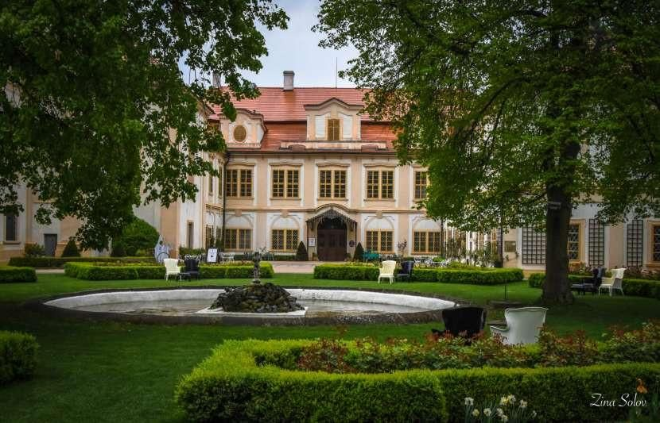
השעה כבר 12 בצהריים, ואנחנו יוצאים לדרך לכיוון צפון צ׳כיה. הכביש עובר בטבעת פראג כך שיש תנועה וקצת פקוק, בכדי לא לנסוע ישר עד לדירה שלנו, אנחנו עושים עצירה בטירת לאוצ'ן- Zámek Loučeň, מדובר על נסיעה של כשעה וחצי משדה התעופה, מזג האוויר קר וסגרירי עם טפטופים, הנוף משגע, בכל מקום אנו רואים שדות עם פרחים צהובים פורחים, ממש שדות על גבי שדות (מדובר על שדות קנולה).
הגענו לטירה, החניה היא בפנים בתוך הטירה, קנינו כרטיס משפחתי בעלות של 620 קרונות (אגב בצ׳כיה בכל מקום יש כרטיס משפחתי שכולל שני הורים ושני ילדים- משפחה אירופאית קלאסית). היופי של הטירה זה הגנים שלה, שכוללים 12 מבוכים. מקבלים מפה של הגנים ומתחילים לחקור ולעבור בין המבוכים, חלקים פשוטים, חלקים נמוכים, חלקם ממש כמו בסרטים ענקיים, המקום ממש מדהים וכיפי רק חבל שמזג האויר קפוא ומטפטף בלי סוף. עשינו 4 מבוכים והילדים והחצי התחילו לקטר, האמת לא שמנו לב אבל השעה כבר שתיים וחצי והרעב מתחיל.
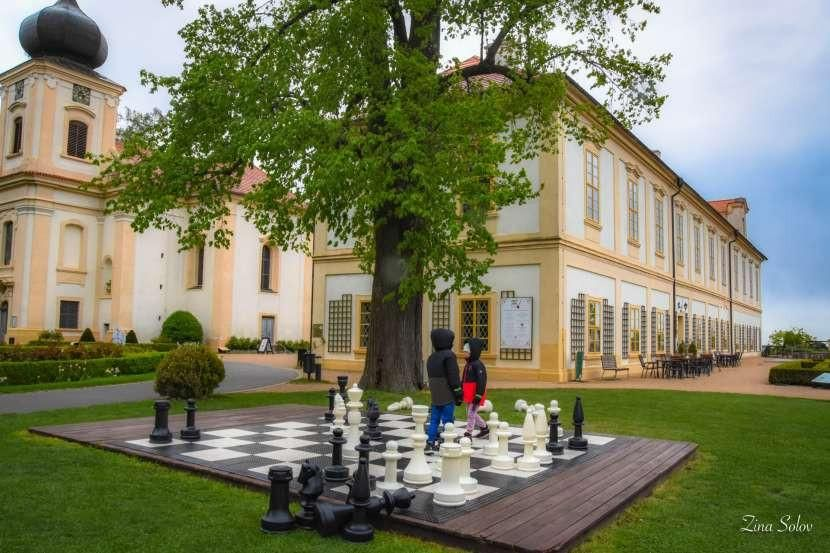 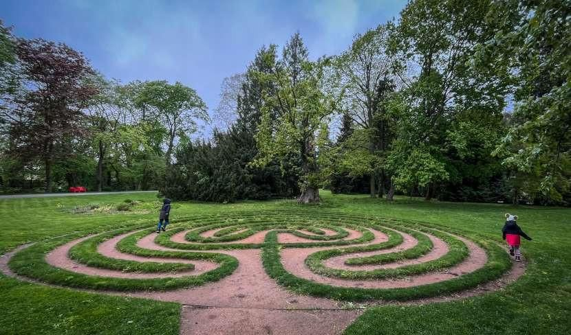
כדי לא לבזבז זמן בחיפוש מסעדה אנחנו מחליטים לאכול במסעדה הראשונה שאנחנו רואים בעיירה הצמודה לטירה, רק שם הבנו שבכפרים של צ׳כיה פשוט לא יודעים אנגלית! אנחנו מקבלים תפריט בצ׳כית, נאבקים עם גוגל טרנסלייט להבין מה כתוב שם, בסוף בחרנו מנת גולש (אי אפשר לטעות עם גולש) שהיה סביר אבל לפחות שבענו ומוכנים להמשך הנסיעה.
עוד נסיעה של כשעה וחצי עד החוה שלנו, בנופים משגעים של הכפרים הצ׳כיים. לקראת שש בערב אנחנו מגיעים לחווה שלנו Farma Basarovi, מדובר במשק מתפקד של בקר, בחווה יש שפע חיות- חזירים כבשים חמור למה שמטיילים להם וכמובן שפע משחקים לילדים- טרמפולינות, כדורגל, כדורסל, בימבות ומה לא- ממש גן עדן רק חבל שאפס מעלות בחוץ. לקחנו דירת 3 חדרים (לא היינו צריכים כזה גדול אבל בבית של שני חדרי השינה אין כלכך פינת ישיבה וההפרש במחיר לא היה גדול). הבית היה ענק ונקי, עם 2 מקלחות ושני שירותים. המטבח היה מצוייד בכל טוב והכי חשוב- מחומם היטב.
את הערב בילינו בשוטטות החווה, ליטוף החיות ומשחקים.
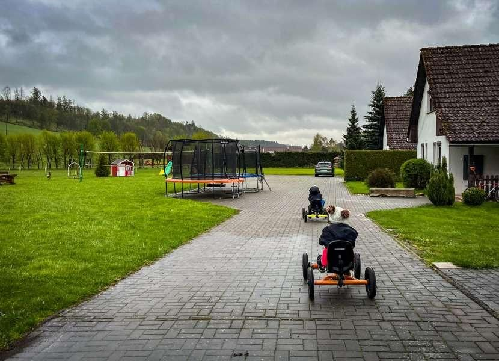
יום 3 20.4.24 סלעים!
קמנו טיפה סגרירי, בחוץ -1 מעלות, שיא החום הצפוי היום 4 מעלות שלמות! בזמן שהילדים יצאו לקור הכלבים שבחוץ לשחק עם המכוניות בימבה ברחבי החווה, הכנו ארוחת בוקר לתפארת. התארגנות זריזה ויצאנו ליעד המרכזי של היום- שמורת אדרשפאך (Aderspach-Teplice) שהוכרזה כשמורה ב-1933 במטרה להגן על הסלעים במקום. בעבר היא לא היתה נגישה ומוכרת למטיילים למעט המקומיים. מדובר בשמורה גדולה על שטח של יותר מ 1770 דונם. לשמורה 2 חלקים- חלק תחתון (האגם- מסלול כחול וסלעי אדרשפאך- מסלול ירוק) וחלק עליון- סלעי טפליצה וביניהם מחבר קניון הזאבים (מסלול צהוב). שימו לב שבקיץ ובעונה כדאי מאוד להזמין מקום מראש, כי מדובר באתר סופר תיירותי. עכשיו אין צורך, ולמרות שזה יום שבת המקום אינו מלא כלל.
מהחווה שלנו נסענו כ-50 דקות דרך העיר טרוטנוב ומשם דרך הכפרים, כנראה שהיה איזשהו פסטיבל אופנועים במקום כי כל שול כביש אפשרי מטרוטנוב ועד השמורה היה מלא עד אפס מקום בקרוואנים ואופנוענים מכוסי בוץ. בשלב מסוים הכביש מוביל בדרך פיתולים דרך יער, ושם בין העצים טיילה לה איילה חמודה שלא הספקתי לצלם אותה כי הייתה כל כך מהירה וברחה משם.
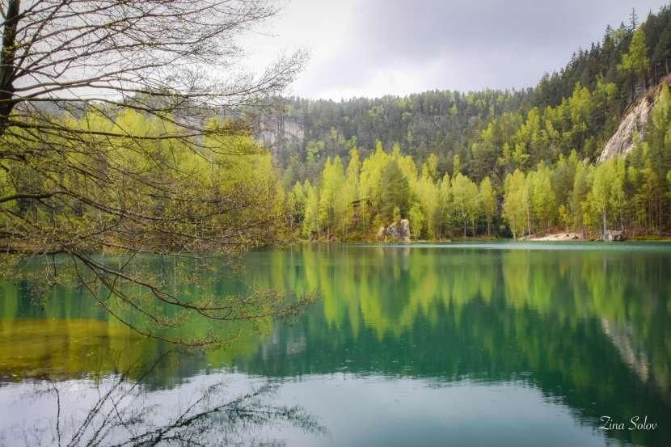
חנינו בחניה של השמורה שעולה 200 קרונות, ממש ליד החניון הגדול של השמורה יש חניה קטנה בעלות של 100 קרונות. גם כאן קנינו כרטיס משפחתי (2 מבוגרים ו2 ילדים) בעלות של 520 קרונות.
בשמורה יש 3 מסלולים- כחול- קליל סביב האגם, ירוק- סביב הסלעים וממנו אפשר לעבור לצהוב- שכולל גם שייט (עליו החלטנו לוותר בגלל הקור והטפטופים שכל הזמן ירדו).
מיד עם הכניסה נגלה לעינינו אגם יפיפה בצבע טורקיז שממש מזמין לקפוץ למים, אחרי כמה תמונות (איך אפשר שלא?!) התחלנו ללכת עם המסלול הירוק, אורכו כ-3 ק״מ והוא מעגלי, הסימון מצויין, הגענו עד לנקודה מס׳ 118 ושם אפשר או להמשיך עם המסלול או לפנות ימינה ובעצם לענות את המסלול הפוך- מה שעשינו. בדיעבד זו היתה החלטה טובה כי כך נמנענו מהמון אנשים ורוב הזמן פגשנו מטיילים בודדים.
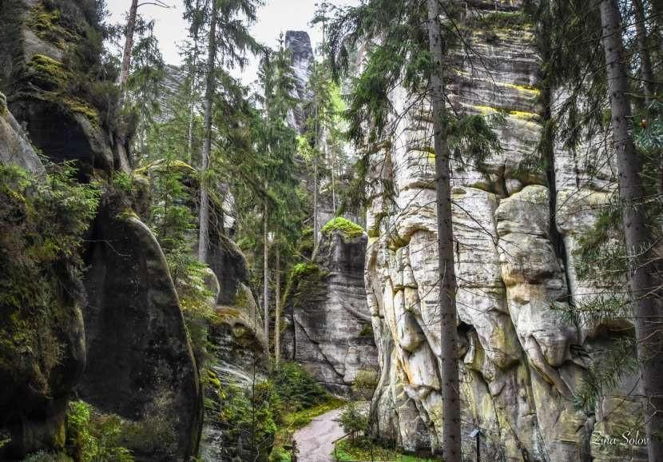
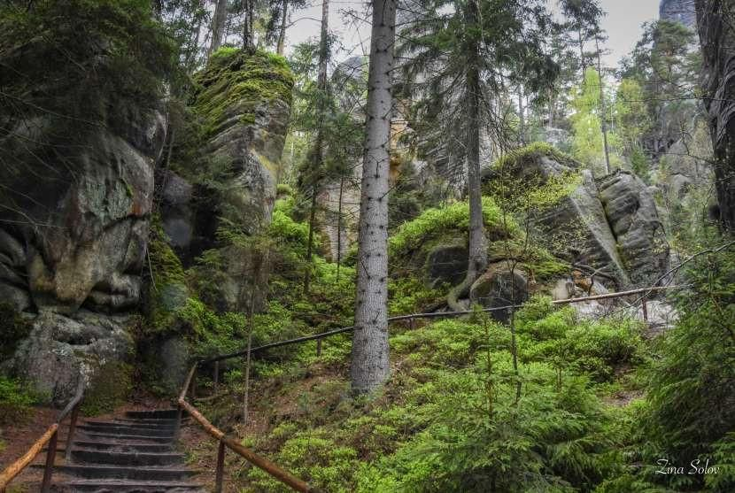
בהתחלה הולכים ביער יפה, עדיין לא רואים את כל הסלעים למעט סלע פה וסלע שם, ואז לפינו הר סלעים ענקי ונראה שהדרך מובילה ישר אליו אבל לא רואים את המעבר, בהתחלה חשבתי שהתבלבלנו והלכנו לאיזה תצפית אבל להפתעתי פתאום יש מעבר בתוך הסלע- מעבר צר ממש והמון מדרגות המובילות מעלה- כאן בעצם נכנסנו לעיר הסלעים (לא דרך השער המפורסם), מיותר לציין שהצוציקים נהנו מכל רגע של טיפוס וירידה ומעבר בתוך הסלעים, עד כדי כך שאפילו הקור והטפטוף הטורדני לא הפריע לנו.
הצטיידנו בנשנושים (פירות ונקניק קבאנוס חו״ל שהילדים פשוט מתים עליו- קונים בכל סופר אירופאי) וכך עם עצירות לנשנושים עליות וירידות יצאנו מהשער המפורסם וסיימנו את המסלול. התלבטתי אם להציע להם להקיף את האגם אבל במזג האויר הזה נראה לי שכולנו מיצינו. סה״כ לקח לנו פחות משעתיים עם מלא עצירות צילום ונשנוש.ֿ
ליד החניה יש מלא דוכנים שמוכרים נקניקיותֿ/ בורגרים/גבינה מטוגנת ובירות כמובן וכך על טהרת הג׳אנק פוד היתה לנו ארוחת צהריים לא רעה כלל.
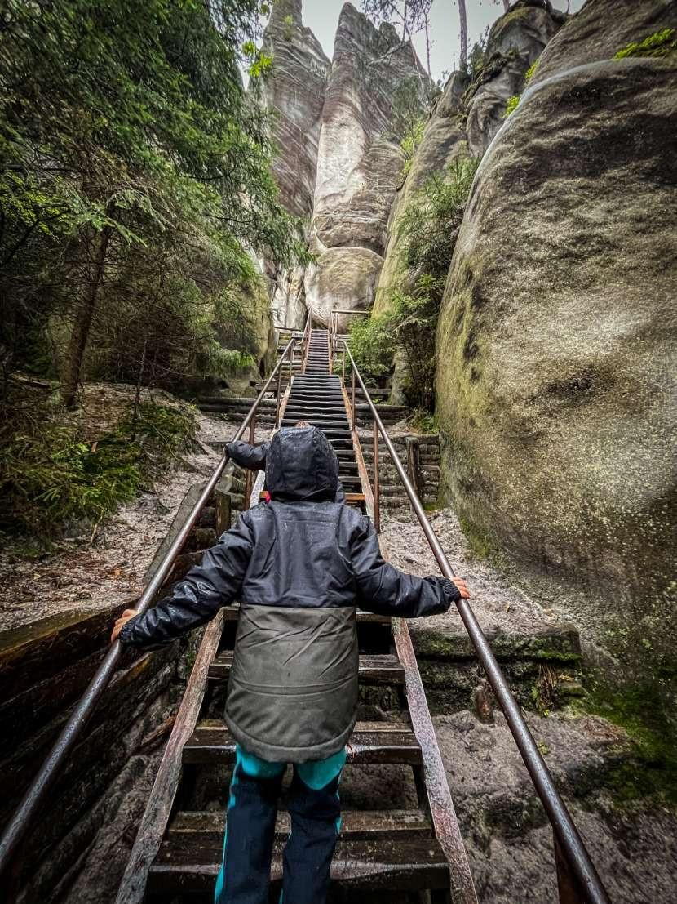
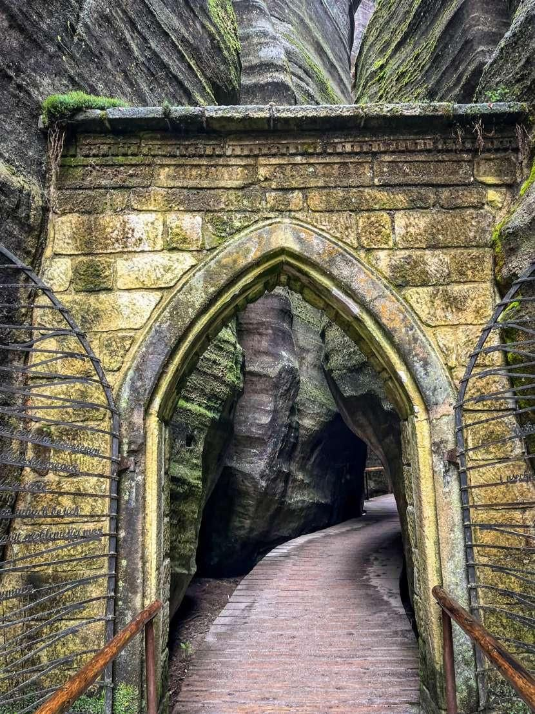
משם החלטנו לנסוע למאלדה בוקי- מדובר באתר סקי קטן ויש שם גם מגלשות הרים שבעונה זו פועלות רק בסופי שבוע. היום יום ראשון כך שזה אמור לפעול, גם לפי האתר שלהם המגלשה פועלת, אולם כשהגענו למקום לא היתה נפש חיה בקופה, ניסיתי להתקשר לטלפון שיש באתר אבל אף אחד לא ענה.
קצת מבואסים החלטתי לנסות את relax park, גם שם יש מגלשות הרים לילדים וגם המקום הזה פועל בסופי שבוע. המקום נמצא ממש למרגלות הר סנז׳קה- ה״חרמון״ של צ׳כיה. התחלנו בנסיעה הקצרה של 20 דקות, עם כל עליה בגובה הטמפ׳ צונחת, והנה הגענו ל-2 מעלות, בחוץ כבר לא יורד גשם אלא פתיתי שלג צונחים עלינו. טוב מגלשות הרים בשלג נשמע פחות מזמין, וכך הגענו לעיירה רק כדי להסתובב ולחזור חזרה. חשבתי אולי לאכול שם צהריים אבל הג׳אנק פוד השביע אותנו א; אנחנו לא רעבים. הבנתי שאלתורים פחות עובדים היום ולכן החלטתי להצמד לתוכנית המקורית ולהמשיך לשביל הצמרות- The Timber Trail, Krkonoše
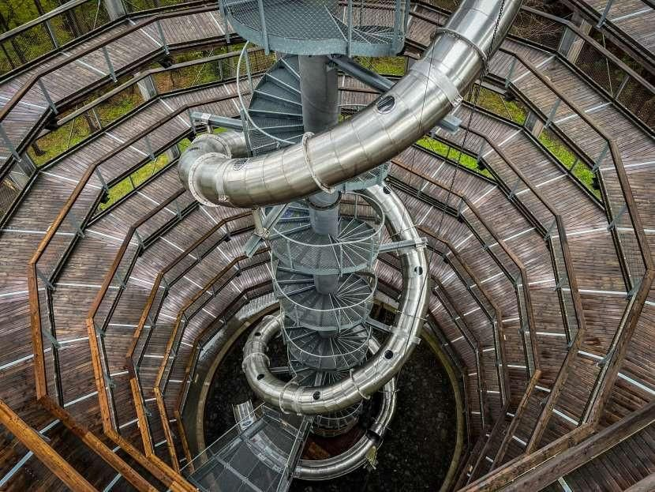
מדובר במסלול הליכה חביב עם עלייה למגדל עצים גבוה שבסופו ניתן לרדת במגלשה. המסלול בעיקר מלמד על קיימות, אקולוגיה והחי באותו היער בו הוא בנוי, עשינו כזה באוסטריה ונהננו ממש. כמובן שהשוס של ההליכה הוא המגלשה בסופה שבה יורדים מטה מקומה 8 בערך. לצערי בגלל השלג המגלשה לא עבדה, לזכותם יאמר שאמרו זאת מיד בקופה עם רכישת הכרטיסים, אבל מצפייה בתחזית לא נראה שבשאר הימים שאנחנו פה יהיה מזג אוויר טוב יותר אז החלטנו בכל זאת לטייל במסלול. הצוציקים בהתחלה קיטרו שאין מגלשה אבל מהר מאוד שכחו ממנה ופשוט רצו קדימה במגדל עד לפסגה. אני בטוחה שביום יפה הנוף פשוט משגע וגם עכשיו הוא יפיפה אם כי הלבן של העננים פחות מוסיף. הסתובבנו קצת למעלה הצוציקים שיחקו עם מתקן שמשמיע קולות שונים של ציפורים שחיות ביער, ואז ירדנו.
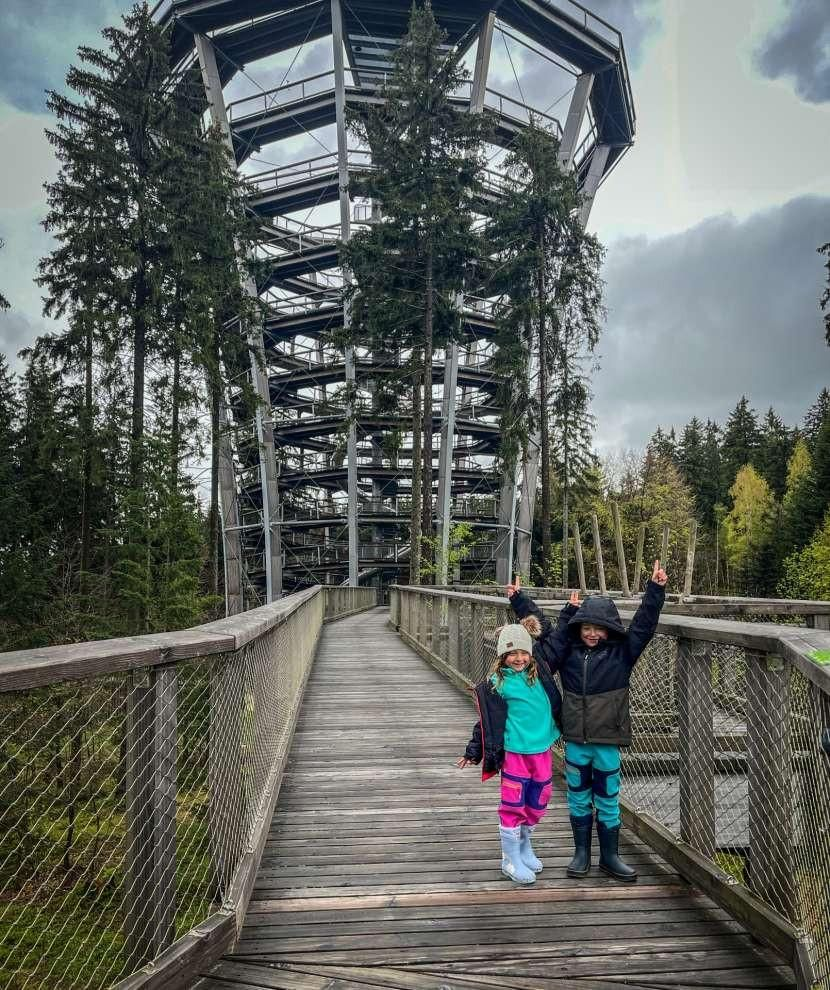
השעה כבר חמש וחצי בערב, זה הזמן לחפש מסעדה לארוחת ערב. וכאן נתקלנו בבעית הגוגל מאפס שמראה לך מלא מסעדות אבל רובן סגורות בעונה זו.
בסוף מצאנו מסעדה לא רעה, עם גינת משחקים בחוץ- Na Špeku בעיירה Vrchlabí שנמצאת 7 דקות נסיעה מהחווה (פשוט לכיוון השני, בהמשך אגב, גילינו שיש בעיירה הו גם פארק מים קטן שלא הספקנו לנסות). יש שם מנות ילדים שהם טרפו בהנאה, אנחנו הזמנו המבורגרים- שלי היה חי בפנים לגמרי, לזכותם יאמר שמיד התנצלו והציעו פיצוי (קינוח וכמובן לא חייבו על המנה), אני בכל זאת ממליצה על המסעדה כי זה נראה כמו תקלה נקודתית וסך הכל האוכל היה טעים והם מיד דאגו לפצות.
שבעים ומרוצים חזרנו לחווה, בזמן שאנחנו נחנו, לצוציקים עוד היה מספיק מרץ להתרוצץ בחוץ.
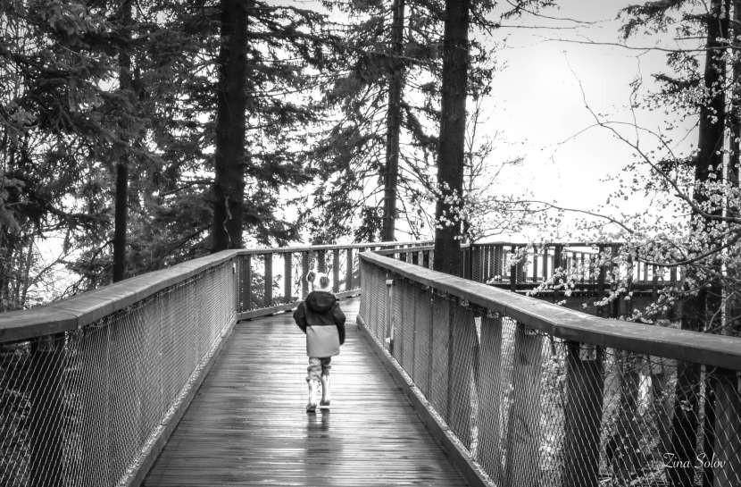
יום 4 21.4.24 אדרנלין בדרכים
במהלך תכנון הטיול יצא לי להכיר בקבוצת פייסבוק עוד משפחה שתכננו לטייל בצ׳כיה בדיוק באותם התאריכים כמונו, כך נוצר לו רומן אינטרנטי סביב הטיול, כשבכל יום כתבנו טיפים על מה ראינו ומה עשינו אחת לשניה. מההתכתבות אתמול נראה שמגלשות מאלדה בוקי כן פעילות ולכן החלטנו לנסות אותם יחד, 2 המשפחות, וכמובן גם להיפגש לדייט סוף כל סוף. עוד בוקר קפוא מקדם את פניניו, בחוץ שמיים כחולים ודשא קפוא!
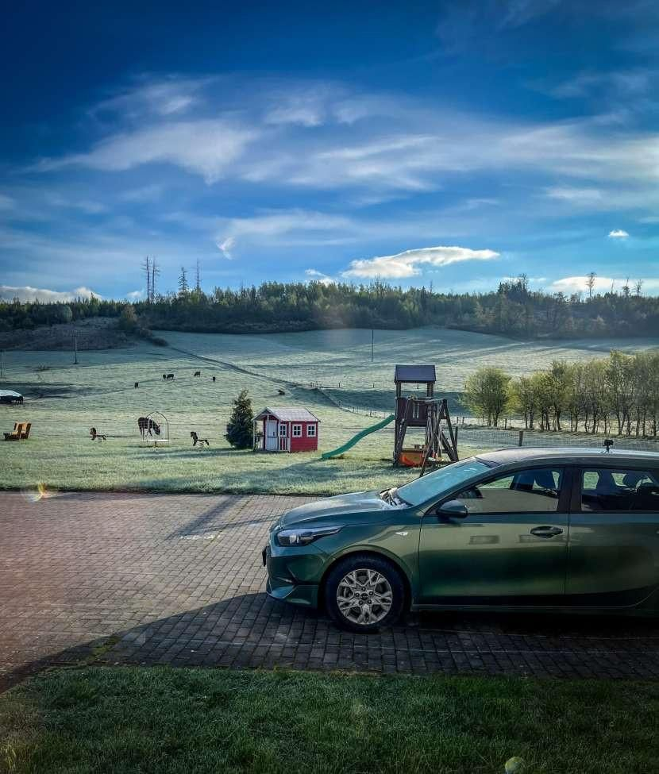
קבענו את הדייט לתשע בבוקר ליד המגלשות בתקווה שהן אכן יעבדו, פחות חשבנו על איך יהיה לעשות את המגלשות בטמפרטורה של 2 מעלות (ספויילר- קפא לי האף!). היינו 2 המשפחות היחידות שם, הגענו ממש עם הפתיחה. רכשנו כרטיסים בעלות של 460 קרונות (כרטיס משפחתי), הבחור אמר לנו שנתכונן לקור כלבים.
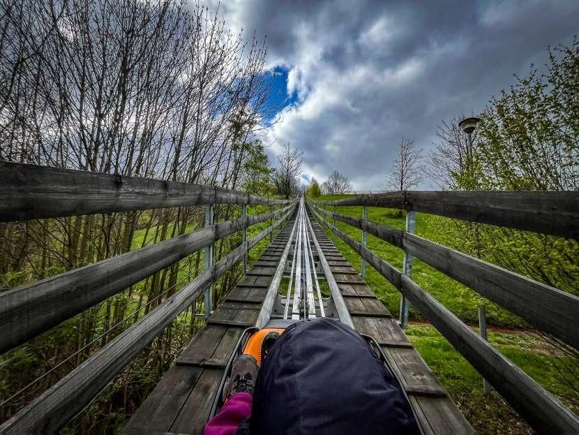
כל הורה תפס ילד וקדימה, אנחנו כבר מנוסים במגלשות הרים אחרי אוסטריה, וקצת רומניה כך שידענו למה לצפות, חוויה מטורפת כיף אדיר וקפאון מוחלט! כמובן שזה לא הרתיע את הצוציקים מלבקש סיבוב נוסף וכמובן שהסכמנו- נו זה כיף חיים!
לאחר מכן החלטנו לנסוע לדייט משותף ולהפשיר מעט עם קפהֿֿֿ/שוקו, חיפוש מהיר בגוגל הראה שיש בית קפה לא רחוק משם (הוא לא היה מיוחד אז כבר לא זוכרת אפילו לאן נסענו). העברנו עוד שעה וחצי בהיכרות וקשקושים ונפרדנו כל משפחה להמשך הלוז שלה.
בגלל שאנחנו מטיילים שלא בעונה, הרבה מקומות לא פועלים עדיין או פועלים רק בסופי שבוע (כמו מאלדה בוקי) וכן כמו פארק החבלים בברדיכוב- Bedřichov High Ropes Park. קראתי הרבה מידע על הפארק שהוא מתאים לילדים מתחת ל140 ולכן החלטנו לנסוע לשם.
מדובר בנסיעה לא קצרה של שעה ארבעים לכיוון, והרבה יותר נוח להגיע לשם אם היינו ישנים בצד המערבי יותר של צפון צ׳כיה, אולם זה היום היחיד בטיול שמתאפשר לנו להגיע כי בסופ״ש הבא נהיה בגרמניה. התלבטנו אם לעלות להר הסנז׳קה שנמצא ליד במקום הנסיעה לפארק אבל הילדים הטילו וטו מוחלט והצביעו לטובת פארק החבלים.
ניווטנו בעיקר עם גוגל מפות ויש לו נטייה לקחת אותנו בכבישים הכי כפריים שיש, מצד שני מדובר בכבישים הכי יפים לכן זרמנו איתו- אם כבר שעה וחצי נסיעה אז שיהיה יפה, ואכן היה יפה מאוד! בגלל שעלינו לגובה הצטבר שלג, בכל מקום חלפנו על פני אתרי סקי שהתמלאו מחדש המרבד לבן דקיק.
העיירה ברדיכוב ממש חמודה, יש אגם שבקיץ אפשר לשחות בו, נוף ההרים המושלגים והיערות פשוט משגע. ליד הפארק יש מסעדה קטנה, לא טעימה במיוחד אבל היינו רעבים מכדי לחפש מסעדה אחרת כך שאכלנו שוב גבינה מטוגנת ונקניקיה עם בירה ויצאנו לפארק החבלים הנמצא מאחורי המסעדה.
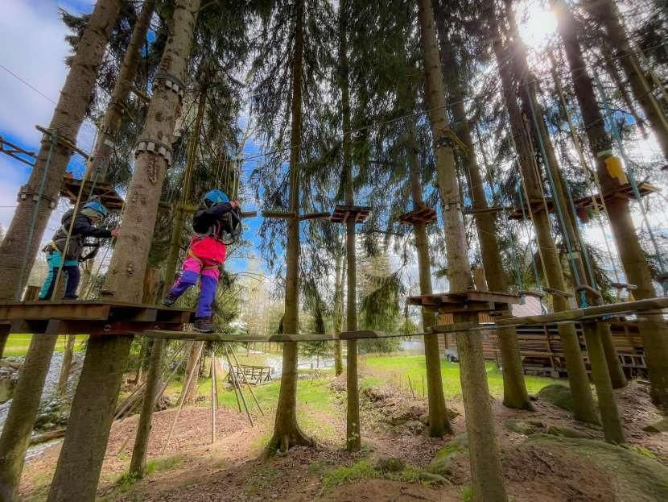
אחרי פארק החבלים בברשוב ברומניה, הפארק הזה די עלוב. מדובר ב-3 מסלולים סה״כ, קל בינוני ואורך יותר, אין כפפות כך שבקור של 2 מעלות עם ידיים חשופות היה פחות נחמד. מצד שני קיבלנו יחס אינטימי משני המדריכים במקום.
הקטנים עשו לבד את המסלול הקל, ויחד איתי עשינו את הבינוני- מודה שבאמצע חשבתי ״לאן הכנסתי את עצמי״ אבל בדיעבד היה כיף- אם כי קר! התענוג עלה לנו ב-1030 קרונות, ומיד לאחר מכן הלכנו לבנות איש שלג משאריות השלג במקום ולעשות עוד קצת מלחמת שלג.
לפני הנסיעה חזרה שוב נכנסנו למסעדה הלא טעימה לתה/שוקו והתחלנו בנסיעה חזרה לחווה שלנו- עוד נסיעה יפיפיה בנופים משגעים, רק ארוכה מידי.
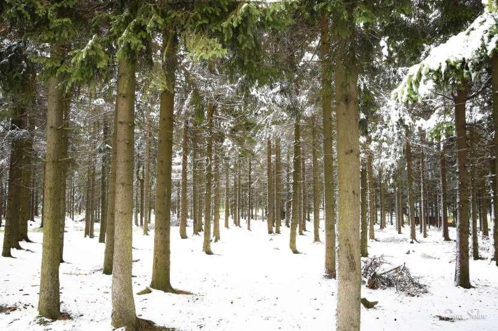
להפתעתי שוב עברנו בעיירה Vrchlabí שנמצאת 10 דקות מהחווה שלנו, ראינו שיש שם פארק מים קטן, ממש חבל שלא ידעתי על זה קודם הייתי משנה תוכניות בהתאם. בכל מקרה אנחנו מצטיידים בארוחת ערב סטייל פיצה מהסופר ונוסעים לערב רגוע בחוה, הילדים זוכים לעוד התרוצצות בחוץ על מכוניות וטרמפולינות. אנחנו עוד היינו באשליה שנצא לטייל אבל כלכך קר בחוץ שהרבה יותר כיף לבלות את הערב על הספה.
בעודנו נחים בחדר שמתי לב שהרדיאטור של החימום לא עובד, באף חדר, התחלתי לדאוג היות ובלילה הטמפרטורות יורדות למינוס 5, מיד התקשרתי לבעלים של החווה שמיד הגיעו לתקן את התקלה והחימום חזר לפעול.
לסיכום של היום, בדיעבד לא הייתי ממליצה לנסוע במיוחד עד לברדיכוב מהאזור המזרחי, אלא אם כן אתם בסביבה ואז נחמד לעצור לטיפוס קל.
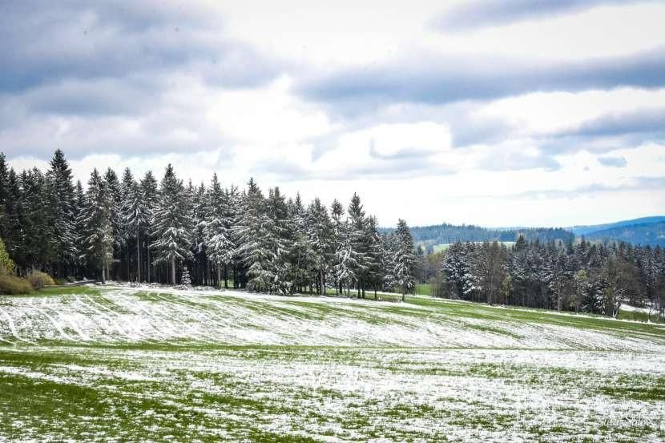
יום 5 22.4.24- באתר סקי מושלג
קמנו לעוד בוקר שמשי יפה וקפוא! בחוץ -1 מעלות, מה שלא הפריע לצוציקים לצאת לסיבוב אחרון בחווה (אנחנו עוזבים את החווה המקסימה הזו ועוברים לחווה מקסימה אחרת). היום אנחנו מטיילים בעיירה שפינדלרוב מלין, הנחשבת לאתר חובה למטיילים בצפון צ׳כיה בעיקר בגלל ריבוי האטרקציות סביבה. אולם מחוץ לעונה מדובר בעיירה די שוממת וללא שום אטרקציות.
נורא התלבטנו אם בכלל שווה את הטרחה לנסוע עד לשם, בעיירה יש רכבלים, אומגה השכרת אופניים, מגלשת הרים ופארק חבלים (מגובה 140). התכתבתי עם כל המפעילים בכדי לנסות ולהבין מה פועל כדי לגלות ששום דבר מאלה לא פועל עדיין- הפתיחה רק ב-1 למאי (למעט מגלשת ההרים ופארק החבלים שכן פועלים). ובכל זאת החלטנו לנסוע, אמרתי מקסימום נטייל בעיירה, נעשה מסלולון הליכה ובריכה.
חצי שעה נסיעה מהחווה שלנו והגענו לסכר על האלבה בכניסה לעיירה, נוף משגע, בחוץ פתיתי שלג (אפס מעלות כן?!) יצאנו לסיבוב צילום קצר. אחרכך נסענו למרכז העיירה כדי לראות אם המידע לתייר פתוח בתקווה למצוא מקום שמשכיר אופניים- הכל סגור.
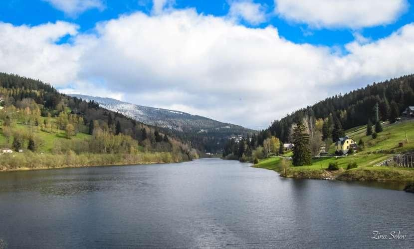
התכנון היה לעשות את מסלול האלבה הלבנה- Bílé Labe, מדובר במסלול מקסים של 10 ק״מ העובר סביב האלבה הלבנה וחוזר לעיירה, אידיאלי לאופניים. לקראת סיום המסלול יש גינת משחקים יפה (לפי הגוגל), אז החלטתי לראות אם אפשר להגיע לגינה ברכב, כיוונו את גוגל והוא הראה לנו מסלול של חצי שעה נסיעה, אמרנו ננסה. התחלנו בנסיעה לכיוון רכבל Svatý Petr ושם עצרנו, הכביש פשוט מכוסה שלג, אי אפשר לעבור, אז מה עושים? חונים בצד והולכים לשחק בשלג!!!
היו שם שלוליות קפואות שהילדים נהנו לנסות לשבור ולדרוך עליהן, ערימות שלג לזרוק ולהתגלגל (טוב שבאנו מוכנים עם ציוד עמיד למים).
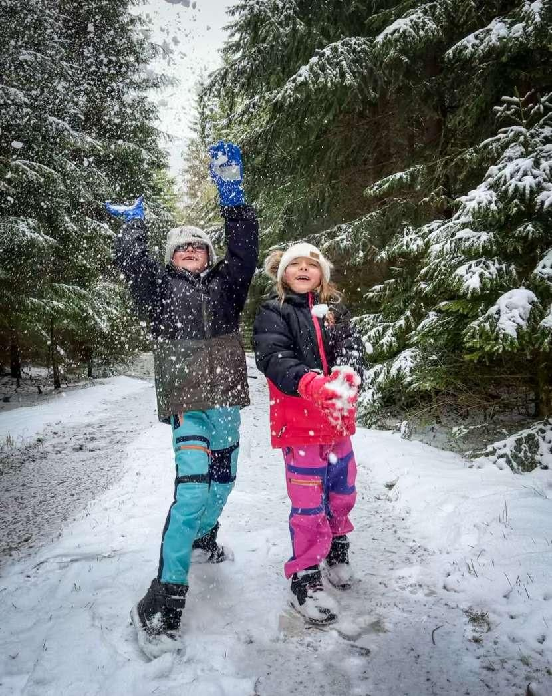
כשמיצינו את הכיף החלטנו פשוט ללכת במסלול האלבה הלבנה ברגל כמה שנגיע, העיקר לטייל, מזג האוויר היה ממש נעים, קר, אבל כשלבושים טוב לא מרגישים את זה, האוויר רענן עם פתיתי שלג ושמש מבצבצת, סביב הכל מושלג ממש קסום.
נסענו לחניון מדבדין (החניון של הרכבל) לתחילת המסלול, מדובר בחניון המשמש גם לסקי והוא בתשלום (לא זוכרת כמה). מהחניון חוצים את הגשר לכיוון ההר ומיד פונים ימינה לתחילת המסלול. כאמור מדובר במסלול לאופניים ולכן יש שביל אופניים מעולה להלכה, אנחנו לא לבד ומעת לעת פוגשים עוד תיירים צועדים להנאתם. האלבה זורמת מימין, בהמון מפלונים יפיפיים, הצוציקים נהנים ממש, נכנסים ליער לחפש איצטרובלים ולזרוק לנהר, לאט לאט מתחיל להצטבר גם שלג בצידי הדרך ככל שעולים בגובה.
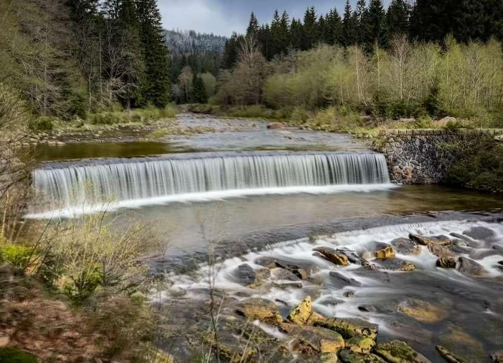
אני עושה הפסקה רגע כדי להמליץ לכם על אפליקציה מעולה לניווט בטיולים רגליים- mappy.cz מדובר באפליקציה שמרכזת את כל מסלולי ההליכה בצכיה וגרמניה (ואולי עוד מדינות), ממש לפי צבע המסלול ניתן אפילו לדקור נקודה ולראות כמה זמן עד לשם, השתמשנו בה הכל הטיול והיא לא אכזבה לרגע!
ובחזרה למסלול, אחרי קילומטר וקצת יש פניה ימינה וממש ליד הפניה יש מסעדה, ראינו שאם אנחנו רוצים להגיע לפחות למפל המרשים הראשון במסלול (Velký vodopád) נצטרך לתדלק את הצוציקים בסוכר, ומה עדיף משוקו חם ומתוק? וכך עשינו עצירה לקפה ושוקו להתחממות. המסעדה ממש חמודה עם נוף יפה ומושלג (זה שמה- Restaurace Myslivna). משם המשכנו במסלול, יש כבר הרבה יותר שלג סביב, וככול שעולים נהיה יותר ויותר מושלג, ממש מקסים. הגענו למפל האדיר, שבפועל לא כלכך אדיר אבל עדיין יפיפה עם תפאורת השלג, בדרך מצאנו גם נטיפי מים קפואים מה שסיפק עוד שפע רעיונות משחק לצוציקים. אפשר להמשיך במסלול הלאה בדרך יש עוד שפע מפלים, אבל כאמור מדובר במסלול של 10 ק״מ (מעגלי עד העיירה) ובלי אופניים לילדים זה קצת מאתגר. סה״כ הלכנו קצת פחות מ-4 ק״מ הלוך חזור.
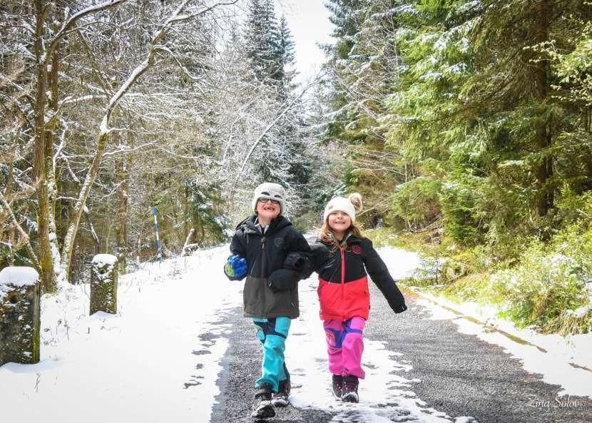
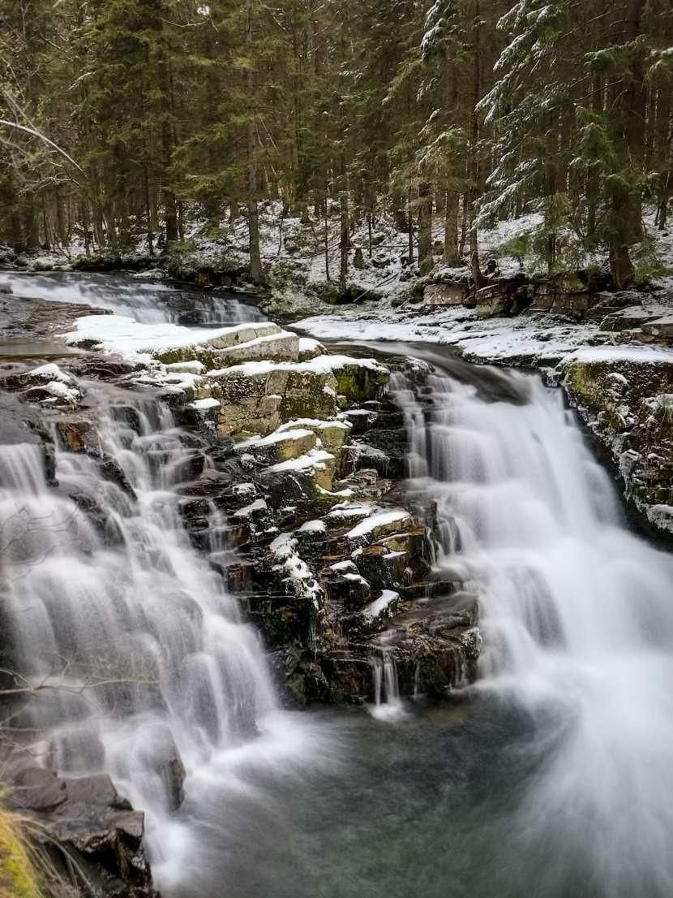
כמובן שההליכה פתחה לכולנו את התיאבון, ומשם נסענו חזרה למרכז העיירה למסעדה Bakchus. אני חייבת לציין שאנחנו פחות אנשי אוכל ומסעדות, ובאמת עד עכשיו לא אכלנו באיזה מסעדה מרשימה שעפנו על האוכל עד למסעדה הזו. מדובר במסעדת בשרים (לא רק) ממש ממש מעולה וטעימה, גם הילדים חיסלו את המנות שלהם וגם אנחנו, אווירה נעימה, שירות טוב ואוכל טעים ממש!
שבעים יצאנו לטיול בעיירה הקטנטונת (שימו לב שהחנייה בעיירה בתשלום, יש מכונות תשלום ליד החניות).
רוב החנויות סגורות, מסעדות גם לא הרבה פתוחות, נכנסנו למוזיאון הלגו (קראתי איפשהו שזה לא רע), מדובר על חדרון תצוגה וחדרון משחק בחנות הלגו, יקר ומאכזב ממש! הילדים נהנו להסתכל על המייצגים ולשחק קצת אבל זה ממש לא שווה את עלות.
והדובדבן שבקצפת לילדים-בריכה! נוסעים לאקווה פארק- Aquapark Hotel, מדובר בבריכה מקורה, די קטנה אפילו, הכוללת כמה בריכות ומגלשות מים, מקום מושלם לסיום של היום. שילמנו של שעתיים משהו כמו 1050 קרונות, מקבלים לוקר לדברים והולכים להנות. כאמור המקום קטן ולמזלנו לא היה הרבה אנשים אז הרגיש לנו ממש מרווח. יש מגלשת אבובים, יש מגלשות רגילות (סה״כ 3) אבל זה בהחלט מספיק לבילוי קצר של שעתיים. לסיכום, גם מחוץ לעונה אפשר למצוא מה לעשות בשפינדלרוב מלין.
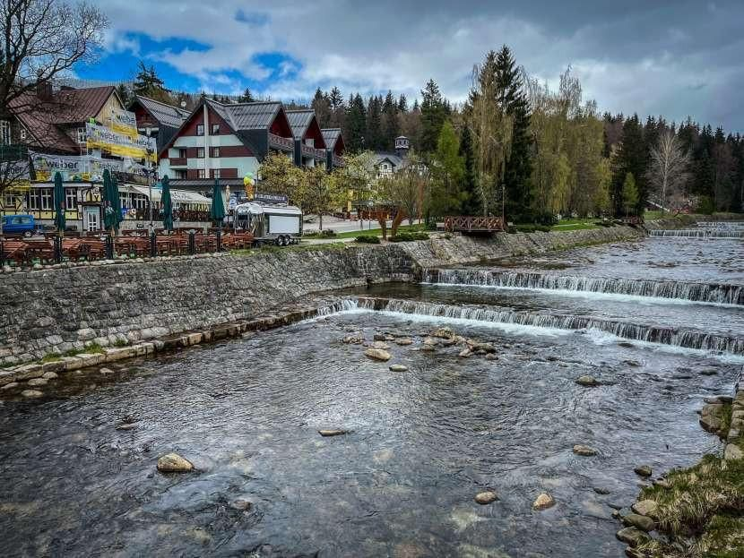
עצרנו להצטיידות מהירה בסופר שבכניסה לעיריה (כי לא ידענו מה שי בחווה השניה) ומשם נסיעה של כ-50 דקות למקום הלינה החדש שלנו- חוות Ranch Bystrá, מזג האויר משתפר ושמש זורחת בעוז, בחוץ עדיין קר עם 5 מעלות! אבל השמש משנה את כל הנוף כך שממש בא לי לצאת מהרכב ולהתכרבל על הדשא!
אנחנו נוסעים בדרך יפיפיה לאורך נהר ה-Jizera, החווה שלנו נמצאת ליד העיירה semily. מדובר האיזור חלקאי וכפרי משופע בחוות הנמצאות על גבעות ירוקות.
הגענו לחווה לקראת שבע בערב, השמש מעריבה, הכל ירוק ומקסים. בעל החווה פוגש אותנו ומראה לנו את הבקתה המקסימה שלנו. בחווה יש סוסים, כבשים והמון טבע ירוק, גם טרמפולינה לצוציקים ובריכה (הפועלת בקיץ). המקום ממש מדהים!
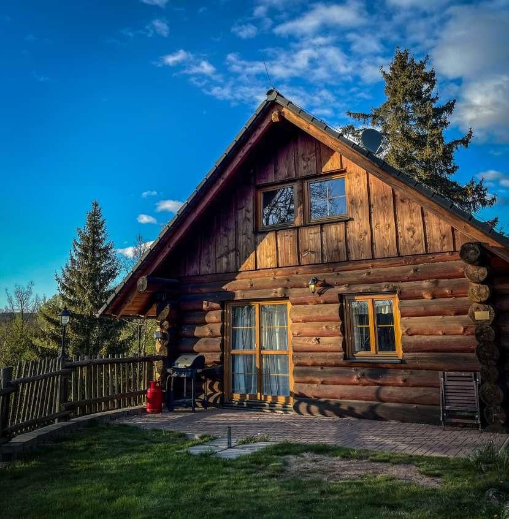
מיד אנחנו יוצאים לסיבוב לפגוש את הסוסים בחווה אשר גם מתמחה באילוף סוסים ורכיבה, זכינו לראות קצת איך מאלפים סוס, הילדים נהנו להביא חציר ולהאכיל את הסוסים (שיחדו את כל הסוסים עם האוכל, בכל פעם שעברו שם הסוסים מיד רצו אליהם). בערב הדלקנו את האש באח ונהננו מערב מקסים!
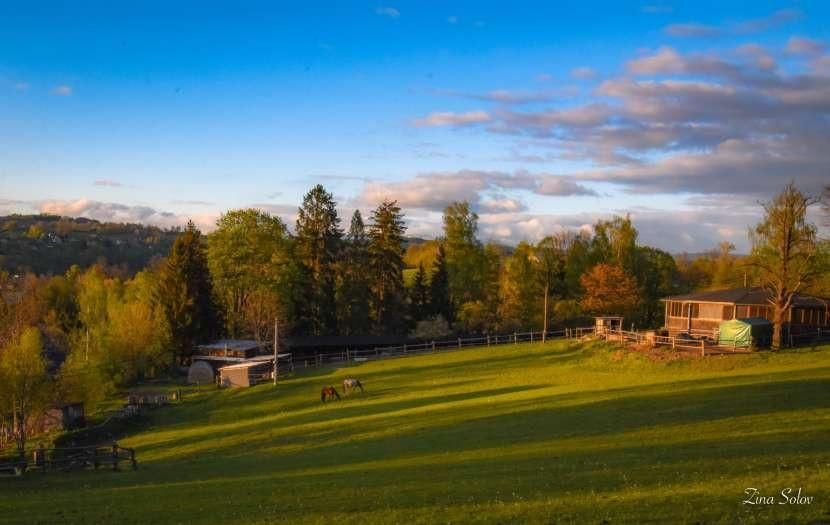
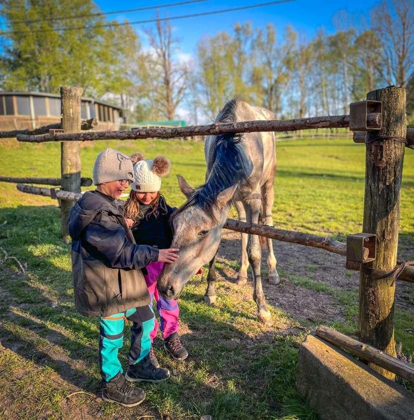
יום 6 23.4.24- גן עדן צ׳כי
קמנו לבוקר שמשי ומקסים, לנוף גבעות ירוקות משגעות! הבקתה ממש התחממה במהלך הלילה בזכות האח, אבל לצערי השמש היפה היא שמש שקרנית, בחוץ עדיים סביב ה-0 מעלות, עד כדי כך קר שיש שכבת קרח על הרכב.
היום אנחנו ״טועמים״ מהמסלולים בגן העדן הצ׳כי, ומתחילים עם מסלול מעבר ריגר. המסלול נמצא 10 דקות נסיעה מהחווה סמוך מאוד לעיירה semily, אבל מה, כביש הגישה מהחווה לעיירה חסום בשל עבודות והדרך החלופית היא דרך חקלאית סביב הגבעות שלוקחת כחצי שעה. וכך אנחנו נוסעים בין החוות הצ׳כיות כשברקע גבעות ירוקות יפיפיות, כבשים וסוסים פזורים באחו ושמש שקרנית.
יש חניה קטנה ליד תחילת המסלול (למתקשים הנה נקודה מדויקת בגוגל מפות- Parkoviště Riegrova stezka - Semily Bítouchov), אנחנו רכב בודד במקום, הצטיידנו בנשנושים ויצאנו למסלול. גם כאן נעזרנו באפליקצית mappy המעולה.
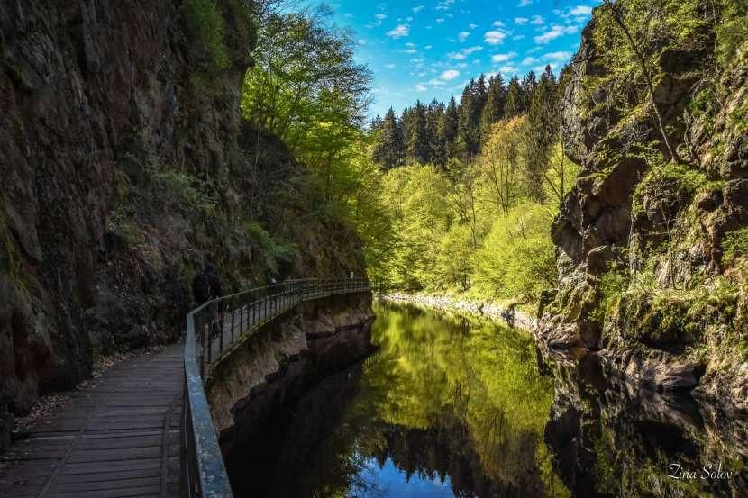
מדובר במסלול של כ-4 קמ קווי ולא מעגלי העובר סמוך לנהר ה-Jizera שמימיו צלולים ממש. לאורך המסלול פזורות תחנות מידע על המקום, הצמחיה וכו.ֿ המסלול מתחיל בגשר תלוי מעל הנהר ומשם נכנס לתוך יער מקסים ובדרך עוברים ליד תחנת הכוח ההידראולית (יש הסברים על הבניה שלה והפעילות שלה). בהמשך המסלול יש עליה לרכס ההר ומשם המסלול ממשיך, אנחנו כאמור היום רק ״טועמים״ מהמסלולים אז זאת היתה נקודת החזרה שלנו. כדי בכל זאת להנות מהיום היפה והקריר הזה, החלטנו לרדת בזהירות ממש לגדת הנהר ולנשנש שם ארוחת בוקר שניה. המים ממש צלולים וקפואים, הצוציקים כמובן נהנו מכל רגע לזרוק אבנים לנהר ולבדוק את טמפרטורת המים.
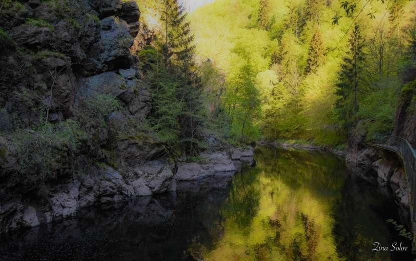
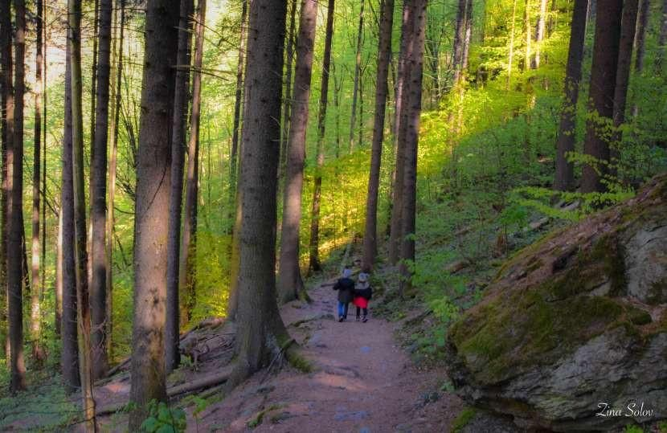
משם קפצנו לעיירה החמודה semily, נראה שיש שם טיילת יפה וגינת משחקים אבל לא רצינו להתעכב ולכן קפצנו רק להצטיידות זריזה בסופר של העיירה.
התחנה הבאה היא טירת הרובה סקאלה, נסיעה של כחצי שעה דרך שדות צהובים של קנולה פורחת הביאו אותנו ללב גן העדן הצ׳כי, עם טירת טרוסקי המתנשאת אל על וחולשת על הסביבה. לצערי מחוץ לעונה הטירה (או חורבותיה ליתר דיוק) פתוחה לביקור רק בסופי שבוע (שלא הסתדר עם הלו״ז שלנו לצערי, הנוף מהמקום אמור להיות משגע). אנחנו נכנסים לתוך יער מקסים ומגיעים לטירה.
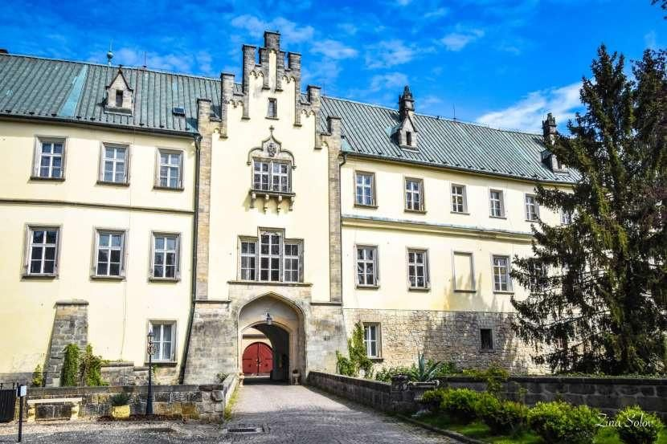
יש חניה סמוך לטירה (בתשלום של כ-80 קרונות לשעה), במקום יש גם דוכני אוכל ומזכרות. לא שמנו לב לשעה אבל כבר כמעט אחת בצהריים והילדים מראים סימני רעב, כמובן שאחרי נשנוש נקניקיות שוב חוזר להם החשק לטייל. הטירה עצמה גם סגורה כעת אבל ניתן להכנס למגרש החניה של האירה ולהתרשם ממנה מבחוץ, גם היא כמו טירות רבות באיזור גן העדן הצ׳כי בנויה בעצם על הסלעים המיוחדים של האיזור.
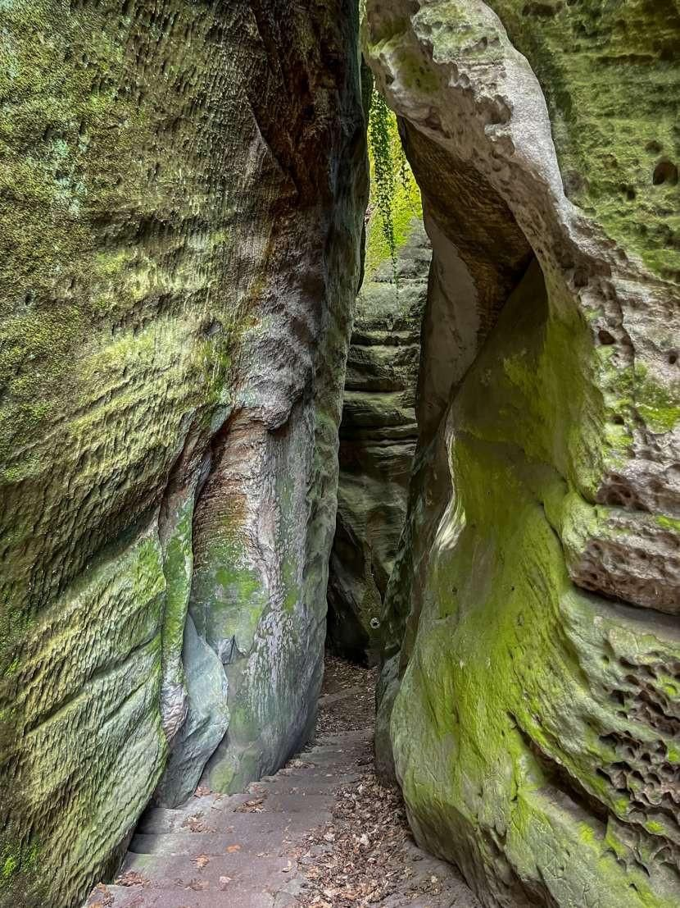
ממש מתחת לדוכנים יש שביל צר שיורד למטה, ונראה כאילו יורד אל תוך הסלעים, בינהם יש מעבר ממש צר שמוביל עוד יותר למטה, וכך אנחנו צועדים במסתורין הזה עד שפתאום אנחנו מגיחים מבין הסלעים ליער נפלא מוקף סלעים! המסלול המפורסם הוא מטירת הרובה סקאלה אל טירת ואלדשטיין אורך כ-3.5 קמ לכיוון, אבל לצערי אין לנו מספיק זמן היום לעשות מסלול של 7 ק״מ, לא בשעה שתיים בצהריים מבלי שאכלנו והצטיידנו, לכן בעזרתה האדיבה של האפליקציה החלטנו לצעוד לכיוון המיטה של אדם" (Adamovo lože), מדובר בהליכה קצרה של 500 מטר אבל ואו כמה יופי! אנחנו צועדים ביער מוקף סלעים ומשם נכנסים לעוד עיר סלעים דרך פתחים צרים, אמנם רק 500 מטר אבל אנחנו לוקחים את הזמן להנות מהנוף. התלבטנו אם להמשיך עוד קצת במסלול כי בהמשך יש תצפיות ונוף יפה אבל בסוף ויתרנו החלטנו לדגום את אחד האגמים שבאיזור.
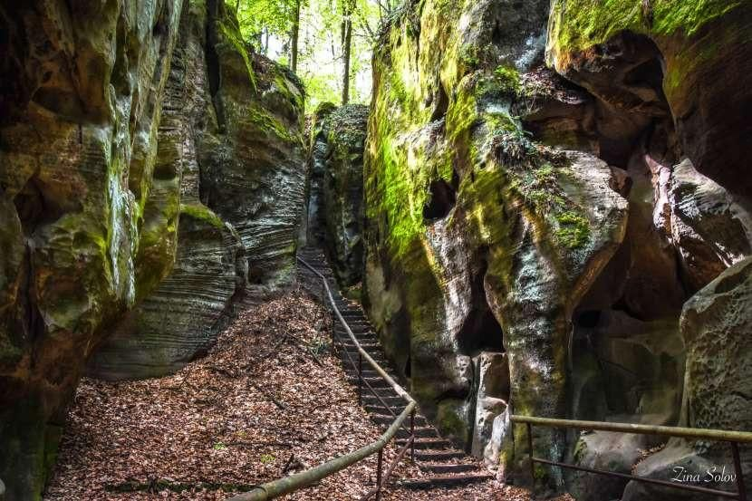
נסענו לאגם Vidlák, האגם היחיד באיזור שיש לו חניה (וגם קמפינג) וממנו יוצא מסלול שנראה מקסים לאורך האגמים, אבל אורכו גם כ-7 ק״מ ואנו נאלצים לוותר עליו בטיול הזה. אגב קראתי איפשהו שכל האגמים באיזור הם מלאכותיים שנוצרו במאה ה-16 כדי ל״פתח״ את האיזור.
האמת, האגם לא כזה מרשים, צבע חום, כמה ברווזים והשתקפות של יער, וקר מידי לפיקניק על גדת הנהר.
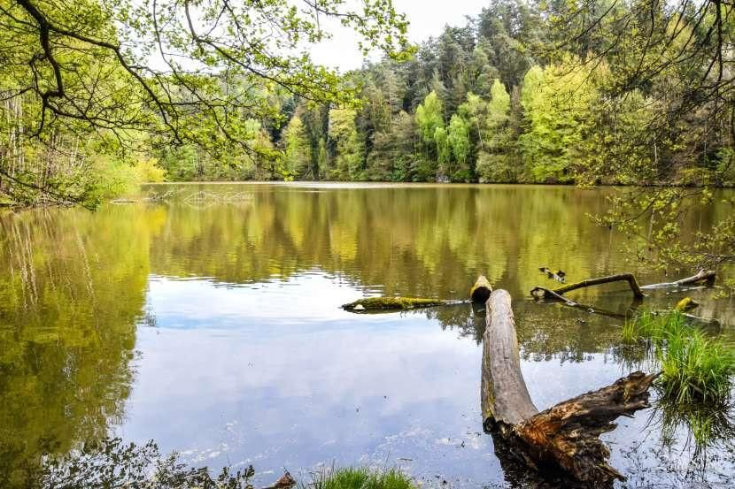
אחרי יום שלם של ״טעימות״ אנחנו די עייפים והחלטנו לסיים מוקדם את יום הטיול ולנוח בחווה, כמובן שלא לפני שאנחנו עוצרים לצילום משגע של טירת טרוסקי על רקע פריחת הקנולה הצהובה.
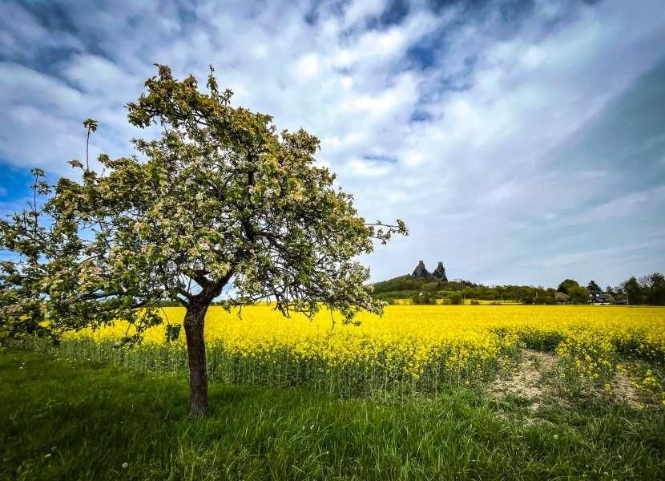
את הערב העברנו בחווה, הילדים נחו עם סרט ואנחנו שנ״צנו מעט, אחרכך יצאנו לעוד סיבוב סביב החווה להאכלת סוסים וכבשים. בעלי הכין ארוחת ערב שלא תבייש אף מסעדת בשרים!
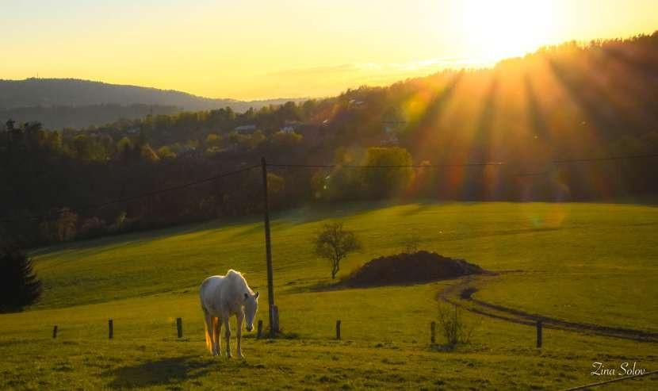
יום 7- 24.4.24 צוקים ואבירים
היום סוף כל סוף מזג האוויר מתחמם וצפוי להיות סביב ה-8 מעלות (אחרי שבוע של טמפרטורות סביב ה-0 זה ממש חם). היום אנחנו נפגשים עם חברים שלנו שגם מטיילים באיזור לטיול משותף למקום הכי מפורסם באיזור- צוקי פראחוב. מדובר בעיר סלעים הנמצאת ליד העיירה Jicin והוכרזה כשמורת טבע ב-1930.
הניווט לקח אותנו בדרכים חלקאיות בין הגבעות, כלכך יפות שלא היה לנו אכפת מאיכות הכביש כי נהננו מהנוף.
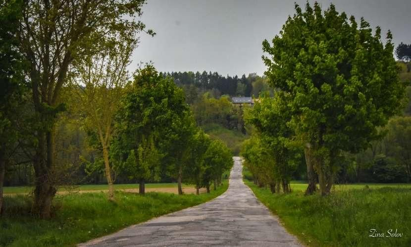
כרטיס כניסה משפחתי לשמורת פראחוב עולה 280 קרונות, שירותים במקום בתשלום של 10 קרונות אז תכינו מטבעות. ניתן לקנות גם מפה אבל האמת שאין צורך כי הסימון מצויין.
אנחנו אוהבים לטייל והילדים גם זורמים אז ברור שבחרנו את המסלול הירוק (3.5 קמ) שהוא הכי מקיף של השמורה. גם כאן התחלנו נגד הכיוון עם עליה מפרכת מאוד בהמון מדרגות עד לגובה הצוקים, המסלול ממש נחמד ולוקח אותנו בין תצפיות מרשימות ממש על הצוקים. הצוציקים נהנים לטייל עם חבריהם כמונו שנהנים מחברת מבוגרים לשם שינוי. כמובן שגם כאן זכינו לעבור מעל, מתחת ובין הסלעים. אז לסיכום כמו שרבים שואלים, מה עדיף פרחוב או אדרשפאך? קשה להחליט כי הן דומות וגם שונות. אנחנו דווקא אהבנו יותר את אדרשפאך (למרות הקור והגשם) כי הרגיש לנו לצעוד ממש בין הסלעים, בפראחוב הרגשנו שראינו אותם יותר מלמעלה, אולי זו גם ״עייפות סלעים״ הרי כבר היינו באדרשפאך וגם במסלול הרובה סקאלה ששם יש סלעים דומים ופשוט כבר פחות התרשמנו. החברים שלנו שטיילו רק במסלול הזה של הסלעים ממש התלהבו.
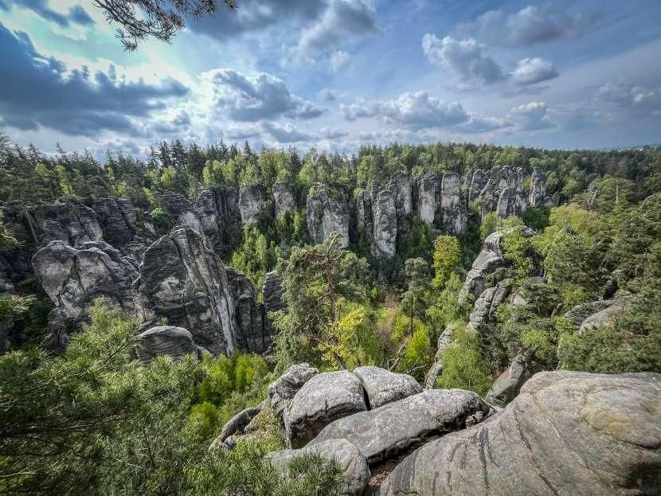
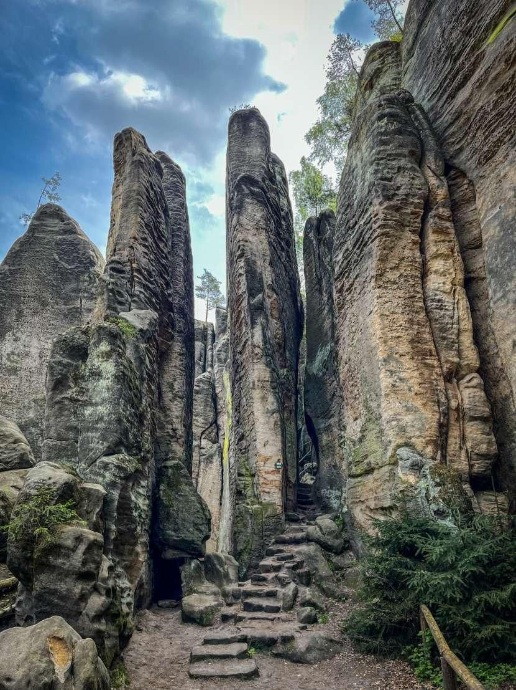
לקח לנו כשעתיים וחצי בקצב נינוח והנה הגיעה שעת צהריים, החלטנו להמשיך ביחד עוד קצת לעיר Jicin (איצ׳ין) שם התאכסנו החברים ולאכול יחד צהריים, חניה מצאנו לא רחוק ממרכז העיירה (בכל זאת זו לא עיר גדולה) והלכנו ברגל למרכז העיר החביב שנראה כמו ריבוע ענקי עם חנויות ומסעדות בפאותיו, שם מצאנו מסעדת המבורגרים נחמדה אבל איטית בטירוף (חיכינו לאוכל שעה!). עם סיום הארוחה עשינו סיבוב קצר בעיירה, ניתן לעלות גם למגדל השעון אבל אנחנו ויתרנו.
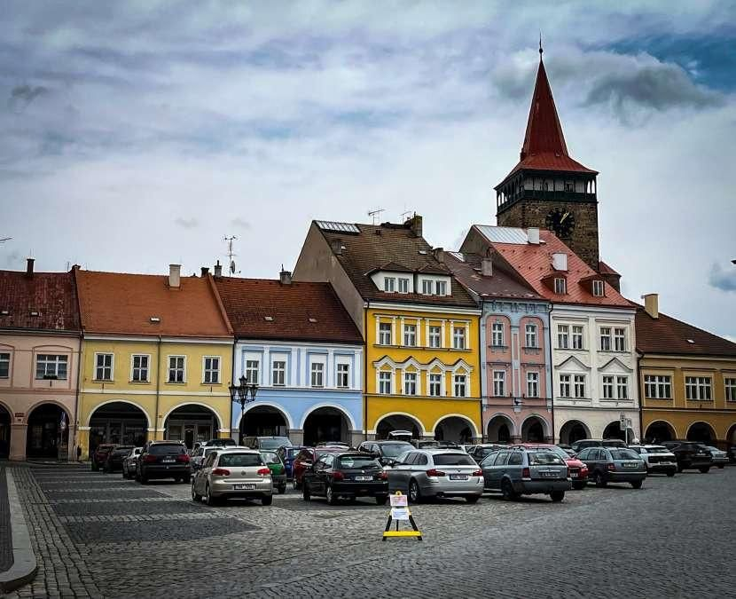
היום בשבע בערב יש לנו הזמנה לארוחת אבירים בטירת דטניצה (כחצי שעה נסיעה מאיצ׳ין). נורא התלבטנו אם לחזור לחווה ולנוח קצת לפני אבל בחישוב זמני נסיעה לחווה ומשם לטירה הבנו שזה פשוט מיותר, לכן החלטנו להתקדם לכיוון ואולי לראות עוד משהו קטן בדרך. המשהו הזה הוא טירת קוסט Hrad Kost, בקיץ הטירה פתוחה לסיורים ובמקום יש גם מתחם משחקים לילדים. אנחנו הגענו לשם בשעה 4 אחה״צ המקום שומם. בעלי החליט לישון שעה באוטו כי מצפה לנו נסיעה ארוכה וקשה בחושך אחרי דטניצה. בזמן שהילדודס גם נחו עם אבא, יצאתי לסיבוב היכרות עם הטירה המרשימה.
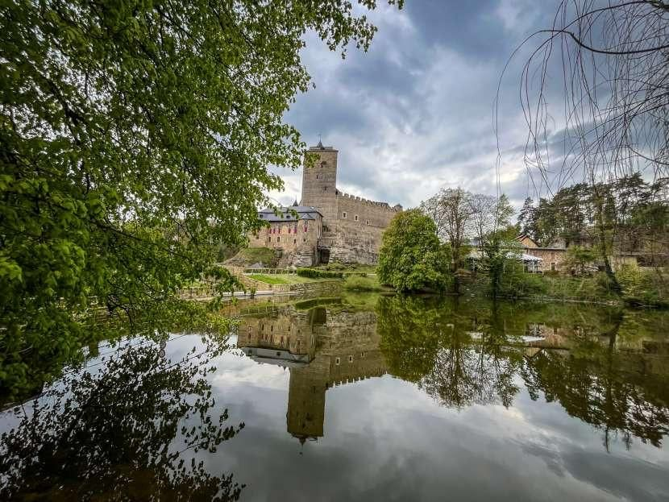
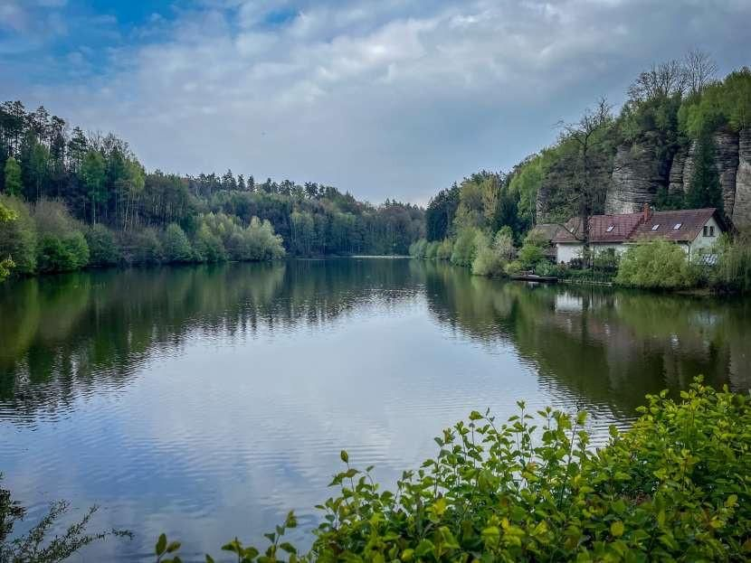
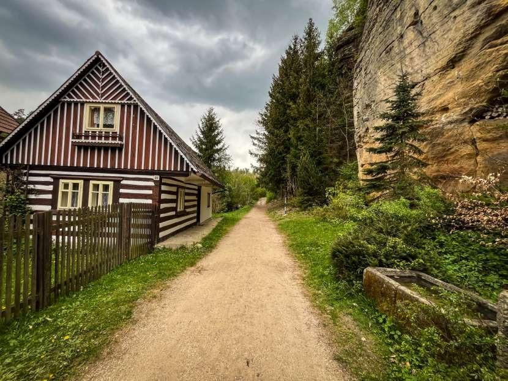
החניה של הטירה יוצאים המון מסלולי הליכה שונים שחבל שלא היה לנו זמן לעשות אותם (קראתי בעיקר על מסלול ה-Údolí Plakánek המוביל בסופו של דבר לכפר יפיפה Vesec u Sobotky שיאלץ לחכות לביקור הבא שלנו בצפון צ׳כיה). אחרי מנוחת הלוחמים יצאנו יחד לתור את המתחם, נכנסנו לחצר החיצונית של הטירה, הקפנו את המבנה, טיילנו טיפה באחד המסלולים סביבה וראינו מלא תלמידים על אופניים (כנראה קבוצת רכיבה בית ספרית).
לקראת השעה שש יצאנו בנסיעה לטירת דטניצה שם בכל ערב יש מופע ימי הביניים (בקיץ מתקיים גם מופע אבירים בצהריים), מדובר על ארוחת ערב במסעדת הטירה משולבת עם מופע ימי הביניים. טרם ההגעה ביררתי איתם אם זה מתאים לילדים קטנים ואמרו שאין בעיה, כמובן שהכנו את הצוציקים מראש שהם הולכים לאכול לאור נרות ולראות מופע חיקוי לימי ביניים (מה שדרש עוד כמה הסברים כמובן).
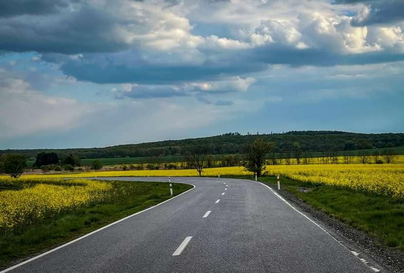
הדרך מטירת קוסט לדטניצה עבורת בין כפרים קטנים וחמודים ושדות צהובים של קנולה, כך אנחנו נהנים מהנוף כשפתאום, קופצת איילה לכביש ממש מתחת לגלגלים שלנו! בעלי לחץ על הבלמים בכל הכוח וממש במרחק סנטימטרים הצלחנו לעצור מלפגוע באיילה החצופה שהמשיכה לקפץ לה לתוך השדות, ראו הוזהרתם סעו בזהירות יתרה!
הגענו עם ברכיים רועדות לטירה, נכנסנו פנימה וטיילנו קצת סביבה, ראינו את מתחם האבירים שבחוץ, ולקח לנו קצת זמן למצוא את המסעדה אבל בסוף קהל האנשים שהולכים למופע לא טועה… (המסעדה אגב ממש בכניסה לטירה). במסעדה יש 3 ״חדרים״ כאשר המופע מתקיים בחדר 1 ו-2 והחדר השלישי הוא מסעדה בלבד ללא מופע.
החלל מואר רק באור נרות, הצוציקים קצת חוששים אבל לאט לאט נכנסים לאווירה, אנחנו מתיישבים בשולחן גדול שהזמנו לנו ולחברים. הזמנו אוכל (המקום הוא לא בשביל אוכל אז לא לצפות ליותר מידי אם כי מה שהזמנו היה לא רע בכלל). וכך פתאום משום מקום מופיע ליצן החצר וצועק לנו באוזן, זה השלב שהילדים של החברים מתעלפים מפחד והם נוטשים. אנחנו טיפה יותר ״עמידים״ ומצליחים להכניס את הילדים לאווירה, בהתחלה הם בהלם אבל כאשר מופיעה רקדנית בטן ואיש עם נחש פחדיהם מתאדים כלא היו והם נהנים מכל רגע. המופע מאוד יפה רק חבל שבצ׳כית אבל החוויה נחמדה ממש. אנחנו לא נשארים עד הסוף כי בכל זאת יש לנו שעה נסיעה עד החווה בחושך מוחלט, בקושי רב הצלחנו להוציא משם את הצוציקים שסירבו להתפנות. בדרך חזרה השתדלנו כמה שיותר להישאר על הכביש המהיר, שהוא מצויין ממש, אבל בסוף אין ברירה וצריך לחתוך לתוך הגבעות כדי להגיע לחווה. שם הנסיעה לא נעימה כלל, הכביש חשוך וצר, אין מכוניות, הבתים חשוכים כי הכפריים הולכים לישון כבר בעשר בלילה, אבל זו השעה שהאיילות יוצאות לכבישים, באמת שהפסקנו לספור כמה איילות ראינו לצידי הדרך, למזלנו לא נתקלנו שוב באיילות מתאבדות והגענו בשלום החווה שלנו. הצוציקים כבר ישנים, עוד יום מוצלח הגיע לקיצו.
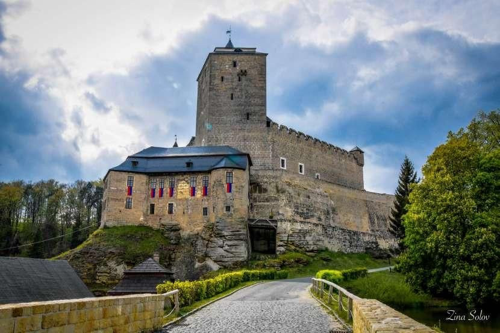
יום 8 -25.4.24 זכוכיות ועוד שלג
עוד יום קפוא לפנינו, לקחנו את הבוקר באיזי אחרי שאתמול חזרנו מאוחר, נתנו לצוציקים להתעורר בנחת, לשחק טיפה עד שהתארגנו לארוחת בוקר.ֿ לקראת השעה 10 יצאנו לכיוון העיירה הראחוב, עוד עיירת סקי חמודה בהרי הענקים. ככל שעולים בגובה הטמפרטורה יורדת ושוב אנחנו בקור סביב 0 מעלות.
הנסיעה עוברת בדרך יפיפיה בתוך יערות, מידי פעם צריך לעצור בגלל עבודות בכביש (ויש הרבה כאלה). לאחר כשעה הגענו להראחוב, שמאוד מנומנמת בעונה זו של השנה.
התחנה הראשונה היא מוזיאון הזכוכית המפורסם של העיירה, בגדול צריך להזמין מקום לסיור שמתקיים כל יום עד שעה 3, אנחנו לא רצינו להתחייב בטח בעונה זו שאין לחץ. ניגשתי לקופה, הקופאית החמודה שאלה מאיפה אנחנו וכמה אנשים אנחנו, כשאמרתי שאנחנו מישראל מיד יצאה מגדרה כדי לארגן לנו סיור, וכך יצא שקיבלנו סיור פרטי באנגלית עם מדריך מקסים וחביב שלקח אותנו לחדר שבו מנפחים את הזכוכית והסביר לנו על התהליך. הסיור עלה לנו 920 קרונות (כרטיס משפחתי). הדבר הראשון ששמנו לב הוא שכל העובדים עם כוס בירה ביד, מסתבר שמותר לשתות בירה בעת ניפוח הזכוכית! אחלה מקום עבודה, המדריך שואל אם גם אנחנו רוצים כוסית, איך נוכל לסרב?ֿ
הצוציקים זכו לנשוף בזכוכית גם כן, וקיבלנו חזירוני זכוכית למזכרת, הם מרוצים וגם אנחנו מרוצים מהבירה.
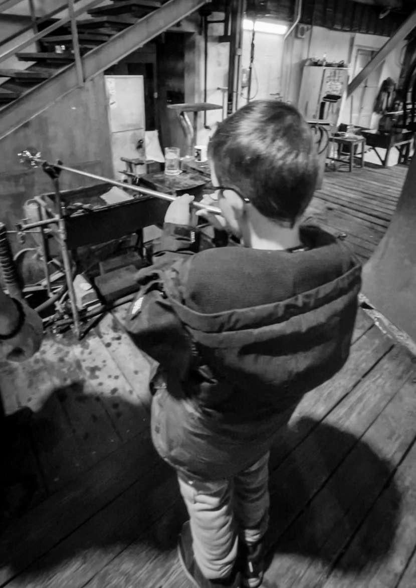
סה״כ הסיור ממש נחמד (אולי כי היה לנו סיור פרטי). אחרי הסיור ניתן לטייל במוזיאון הקטנטן שם יש מייצגים יפהפיים, יש במקום גם גלידריה וקפה וכמובן גם חנות מזכרות. וכך אחרי בילוי של כשעה וחצי המשכנו ליעד הבא והוא מפלי המומלבה.
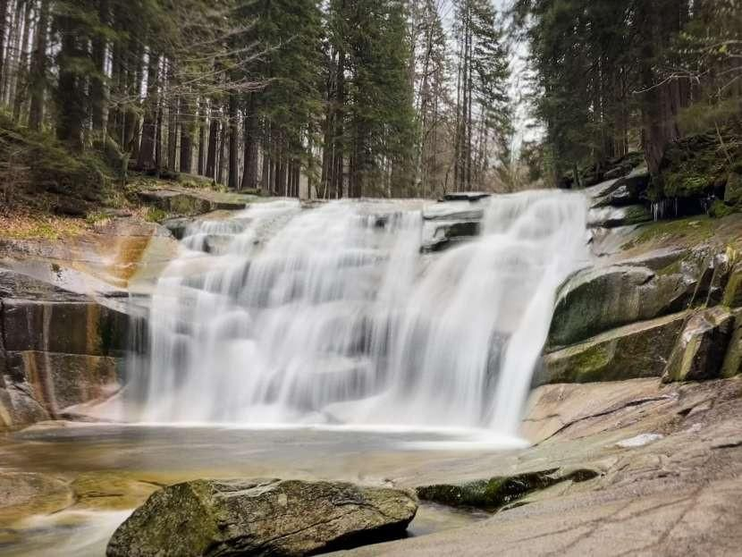
מדובר במפלים לא גבוהים ולא חזקים מידי, אבל יפים, בקיץ ניתן גם להכנס לשכשוך. החניה היא ליד מוזיאון המכרות, בתשלום, ומשם יש שביל עפר הלוקח ישר אל תוך היער. הליכה לא ארוכה מידי (פחות מקילומטר לדעתי) לאורך נהר המומלבה ואתם במפלים. ירדנו עם הצוציקים עד למפלים עצמם ואם לא היה אפס מעלות בחוץ היינו גם טובלים רגליים, אבל לא הספקנו להשתעשע במחשבה הזו כשפתאום נוחתים עלינו פתיתי שלג! בהתחלה אנחנו נורא מתלהבים מהשלג, הצוציקים מנסים לטעום אותו, אבל השלג מתגבר, למזלנו בגדה השניה יש בקתה שלפי גוגל נראית כמו מסעדונת, החלטנו לנסות את מזלנו, מקסימום נעשה עצירת שוקו חם, ואכן הבקתה היא מסעדה מקומית קטנה שכנראה נועדה להיות מלכודת לתיירים שמטיילים בסביבה. אנגלית זה לא הצד החזק שלהם ורוב התקשורת היא בשפת הסימנים (הם גם לא מקבלים אשראי, רק מזומן). הזמנו שוקו לילדים ומרק לנו והתיישבנו ליד החלון לצפות בשלג, כשראינו שהשלג לא נחלש ושעת צהריים הגיעה נאלצנו להזמין גם גולש לכולנו (היה הגולש הכי לא טעים שאכלנו אי פעם). וכך חיכינו שמזג האוויר יתבהר. כלכך התלהבנו מהשלג ששלחנו תמונות לכולם בארץ רק כדי לקבל חזרה תמונות של 46 מעלות שהיו בארץ באותו הזמן… מזל שברחנו!
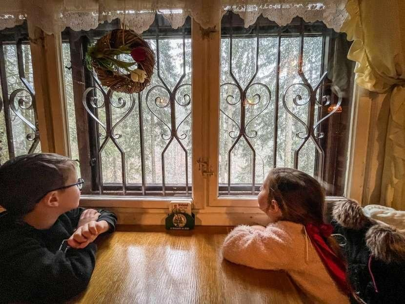
כשהשלג הפסיק יצאנו לעוד סיבוב סביב המפלים, אמנם ירד לא מעט שלג אבל הוא לא נערם- בכל זאת 2 מעלות מעל האפס. אבל אין ספק שהנוף השתנה, צמרות העצים לבנות לגמרי! אחרי עוד סיבוב תמונות קצר צעדנו חזרה לרכב.
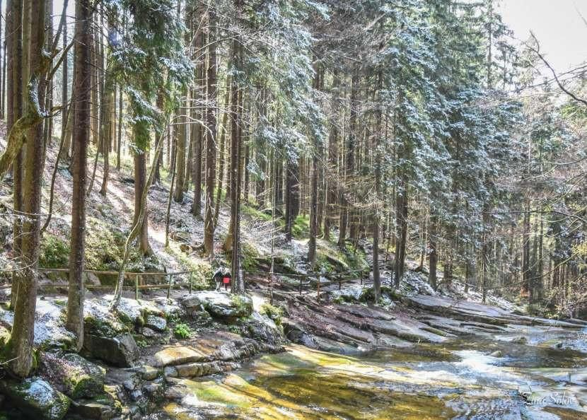
במקור תכננתי למצוא מסעדה לאכול בהראחוב אבל השלג שיבש את התוכניות ולמרות הגולש הלא טעים אף אחד לא רעב. לכן אנחנו נוסעים ישר לאטרקציה האחרונה- מגלשות ההרים.
שימו לב שבצ׳כיה יש 2 סוגים של מגלשות הרים- אחד עם חגורות ועל מסילה חיצונית ועוד סוג זה ללא חגורה ובמעין תעלה מברזל שבה יושבת המגלשה. בהראחוב זה הסוג בלי החגורה אבל החוויה די דומה בשתיהן. משלמים 460 קרונות ומתיישבים במגלשה אשר בהתחלה עולה (הכבל מושך אותה במעלה הגבעה) ואז יורדים למטה בפיתולים. בגלל שיש טפטופים אני לא מגזימה עם המהירות ומידי פעם מאיטה מעט (לא אופייני לי אבל בכל זאת בטיחות חשובה לא?) עדיין היה כיף אדיר ובנוהל שלנו מיד הלכנו לעוד סיבוב.
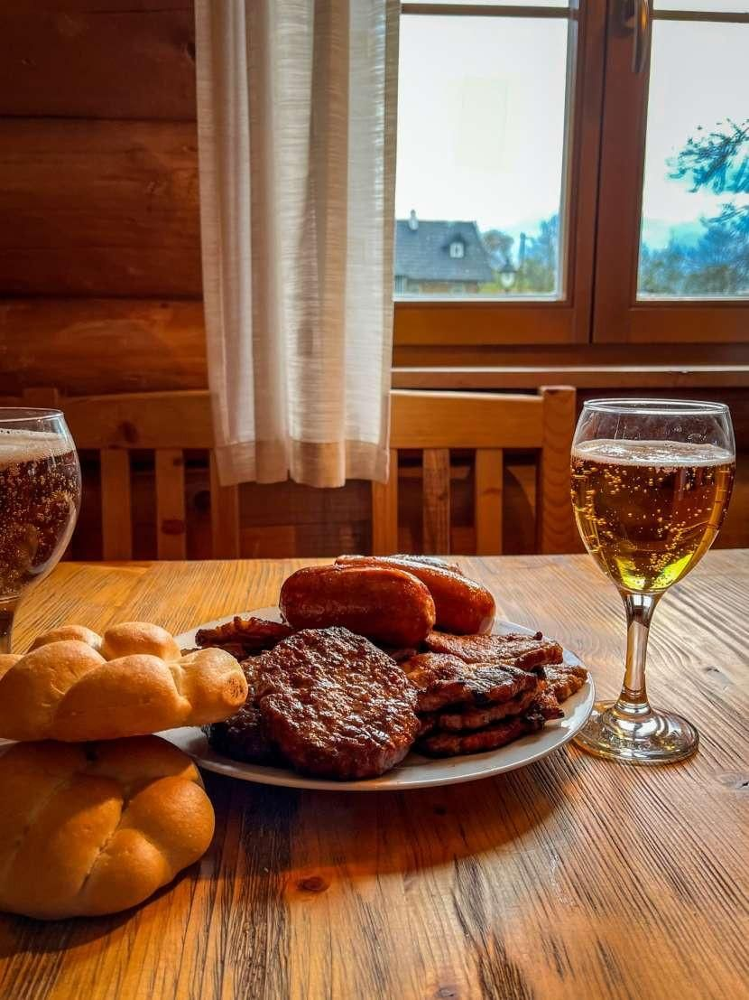
משם אחרי שמיצינו את האזור, וקר מידי לטייל בטבע חזרנו חזרה לחווה הנעימה שלנו, לארוחת ערב נעימה ועוד טיול אחרון סביב החווה.
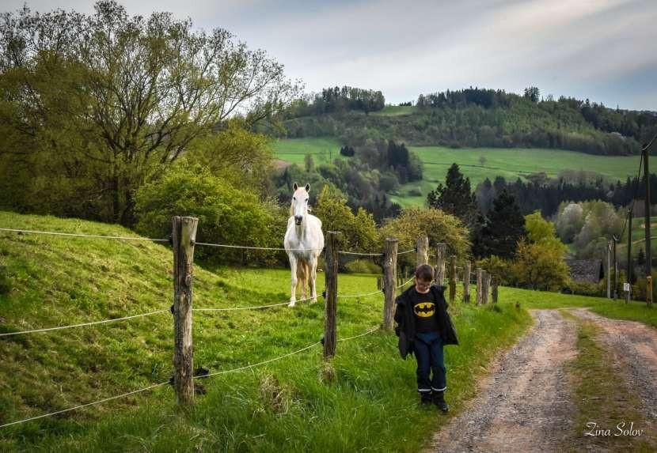
יום 9- 26.4.24 מדע
סוף סוף מתחמם, היום אנחנו זוכים ל- 12 מעלות! היןם אנחנו עוזבים את החווה המקסימה, ונוסעים לגרמניה, לא לפני שנעשה עוד כמה עצירות בדרך.
לאחר אריזות, העמסת הרכב והתארגנות, התחלנו את הבוקר בהריסות של טירת ורנוב- The ruin of the rock castle Vranov בהמלצת בעל החווה, בתמונות המקום נראה מלא מסתורין ויפה אז החלטנו לבדוק אותו, במיוחד כשהוא נמצא במאלה סקאלה שזה בדרך לליברץ. שימו לב שהדרך לטירה מאוד צרה וקשה ובשלב מסוים כשהגענו לדרך עפר הבנו שעד כאן עם הרכב. חנינו בצד ויצאנו להליכה עד הטירה (לפי אפליקצית mappy הנהדרת מדובר בהליכה קלילה של 700 מ׳, בשיפוע קל במעלה ההר בתוך יער מקסים. עדיין בוקר והכל רענן וצלול. הגענו לשער שנראה שמוביל לטירת פיות, בפנים משלמים כ-150 קרונות לכולנו ונכנסים לראות את הטירה.
צד אחד שלה הרוס לגמרי, בצד השני השתמר הפנתיאון שממנו נשקף נוף משגע על הנהר מאלה סקאלה והכפרים מטה, למעלה בפנתיאון יש גלרית אומנות. משם עברנו לצד ההרוס לטפס בין הריסות הטירה. בסך הכל המקום חביב מאוד אם כי לא הייתי נוסעת עד לפה במיוחד רק אם אתם בסביבה ויש זמן אז שווה עצירה.
אחרי שעשינו טיול בוקר קליל אנחנו מוכנים ליום בילוי בפארק המדע iqlandia הנמצא בעיירה ליבריץ. ממש ליד הפארק נמצא פארק המים המקורה בבילון (אולם לשם כבר לא נספיק להגיע היום) אבל ממליצה לשלב את שניהם- ניתן לקנות גם כרטיס משולב. בגלל שמשם אנחנו נוסעים עוד לגרמניה ויתרנו על בבילון.
ה-iqlandia הוא פארק מדע ענקי המתפרס על פני 4 קומות (למי שהיה באמסטרדם במוזיאון נמו זה ממש אותו העיקרון) כל קומה וכל מתחם מוקדשת לנושא מדעי אחר הכל מגוף האדם, פיזיקה מתמטיקה המצאות וכו. רק אחרי שהצוציקים עברנו מתקן מתקן בכל קומה, ואנחנו כבר נגמרנו סופית איפשהו על הספסלים בפינה, הם הסכימו להתפנות.
מליברץ יש לנו נסיעה של שעתיים עד לגרמניה ולעיירה באד שנדו הנמצאת סמוך לגבול עם צ׳כיה. רבים נשארים לטייל באזור הרז׳נסקו ועושים שם את המסלולים (עדיין בצד הצ׳כי של הגבול) אולם קראתי שלפני שנה הייתה שם שריפה גדולה שהרסה הרבה מהירוק, אז ויתרנו על מסלולים שם- נשמור לפעם הבאה. אני מאוד רציתי להגיע לאזור בסטאי שנמצאת בסקסוניה, ומה הסיכוי שאי פעם בכלל ניסע לאזור הזה של גרמניה? לכן החלטתי לשלב בטיול הזה טעימה קטנטונת גם מהצד הגרמני של הגבול.
כאמור נסיעה של שעתיים מליברץ, מעט מעייפת אבל הכביש טוב אם כי יש הרבה תנועה, סמוך לעיירה הרזנסקו אנחנו נוסעים ממש ליד גדות נהר האלבה, וממש כמה קמ אחר כך חולפים על פני שלט שמודיע שעברנו את הגבול לגרמניה.
השעה כבר כמעט חמש אחר הצהריים כשאנחנו מגיעים למלון הדירות שלנו בלב באד שנדו- STEIGER Apparthotel Bad Schandau. מדובר במלון דירות חביב, בטרם ההגעה קיבלנו במייל את פרטי הצ׳ק אין (קוד לתיבת הדואר בה חיכה לנו המפתח לחדר), הזמנתי לנו דירת 2 חדרים, מאוד מרווחת נקיה ונעימה, אולם החיסרון היה שחדר אחד היה למעלה ואחד למטה, בעוד שהמדרגות ממש תלולות, לכן ישנו כולנו באותו החדר. חסרון נוסף הוא שאין שם אנשי צוות, למעט בבוקר בחדר האוכל ובשביל ארוחת בוקר צריך להרשם באפליקציה שלהם ולבחור שעה. ֿ
אחרי שהתמקמנו בדירה יצאנו ברגל לחקור את העיירה ולחפש כמובן מקום לאכול, טיילנו קצת לאורך האלבה, בהמשך יש גן שעשועים שנראה ממש נזמין אבל לא הספקנו לטייל עד שם כי הרעב הכיע אותנו. וכך מצאנו מסעדה נחמדה במרכז העיירה Zur Schlossbastei (שלא מקבלת אשראי), אבל מגישה אוכל ממש ממש טעים! שבעים ומרוצים החלטנו לסיים את היום במרחצאות טוסקנה הנמצאים 5 דקות הליכה משם, רק את התיק עם בגדי הים השארנו בדירה, מזל שהכל קרוב ובעלי רץ לחדר להביא את התיק ובינתיים אני והצוציקים מצאנו כספומט וחיכינו לו ליד המזרקה החמודה במרכז העיירה.
מרחצאות טוסקנה הם מקום מושלם לסיים יום ארוך ומעייף, הכניסה עלתה לנו 48 יורו, אבל היה שווה של יורו ויורו. בשעה הזו המקום די שקט, במתחם יש המון בריכות, גדולות, קטנות, ילדים עם מגלשה, בריכת wild river קטנה וגם בריכה חיצונית חמימה ונעימה. בעשר בערב כשהילדים כבר נרדמים במים חזרנו לדירתנו הנעימה (הליכה רגלית קלילה של 10 דקות).
יום 10 27.4.24- שמורת בסטאי
סוף כל סוף התחיל האביב, אפשר להחזיר למזוודה את המעילים החמים ולהוציא את הסופטשלים הדקים. מזג האוויר מדהים היום, שמש זורחת, וקרירות אביביב נעימה בחוץ. אחרי ארוחת בוקר סבירה במלון אנחנו יוצאים לנקודה הראשונה להיום והיא שמורת בסטאי.
בטח כולכם ראיתם את תמונת הגשר בין הסלעים של בסטאי- זה סימן ההיכר של השמורה. נסיעה נעימה של כעשרים דקות מהמלון דרך כפרים גרמניים יפים, יערות ונוף נהר האלבה המתפתל מטה הביאו אותנו לחניון של שמורת בסטאי. יש 2 חניונים- חניון מרוחק יותר (גם לקרוואנים) במרחק כ-3 ק״מ מהגשר (למי שרוצה יש שאטלים לתחילת השמורה) ויש גם חניון קרוב יותר ממש 10 דקות הליכה מהגשר בעלות של 7 יורו ל-4 שעות (מניחה שבקיץ הוא עמוס בטירוף, וגם עכשיו היו שם לא מעט אנשים כי בכל זאת יום שבת וזה ה-weekend).
מהחניון יוצאים שפע מסלולים לכיוונים שונים אותם ניתן לטור במשך כמה שעות טובות, לצערי אנחנו נמצאים באזור רק ליום אחד ולכן מתמקדים בגשר. הליכה בשביל סלול ורחב מובילה אותנו למלון בסטאי, עם כמה מסעדות במקום ותצפית מדהימה על הנהר האלבה מתחת. אנחנו פונים שמאלה לכיוון התצפית על הגשר, שווה להידחף בין המוני אנשים כדי להגיע לנקודה ולצלם את הגשר המפורסם שנבנה בשנת 1851, הבנוי על קשתות המתוחות בין שני המצוקים. הגשר הוקם למטרות תיירותיות על מנת לחבר כמה משיני הסלעים הפורצים מהקרקע.
אחרי שהתרשמנו מהגשר היפיפה אנחנו כמובן צועדים עליו, איזה נופים משגעים של האלבה נגלים לעינינו… ניתן להמשיך ולצעוד ואז לרדת למטה עד לגדה של האלבה (ואז לעלות חזרה מה שפחות קורץ לנו) במקום זה תפסנו שולחן על מרפסת התצפית לאלבה ונשנשנו גלידה!
משם לתחנה הבאה להיום- מבצר קוניגשטיין Königstein. מדובר באחד המבצרים המרשימים ביותר והגדול ביותר בסקסוניה הגרמנית. הוא יושב על רמה שעולה 240 מטר מעל נהר האלבה וחולשת על אזור. במבצר יש מעל ל-50 מבנים חלקם בני 400 שנה ויותר. את המצבר מקיפה גדר באורך של 1800 מטר ועובי של 40 מטר. המקום שימש בעבר ככלא, והיום מושך המוני תיירים.
בכדי להגיע למבצר ניתן לחנות למטה בהר בחניון ענקי ומשם ללכת ברגל או לקחת שאטל רכבת תיירים בעלות של 12 יורו הלוך חזור (יש גם אוטובוס שנוסע פעם בחצי שעה מהעיירה קוניגשטיין ועד לטירה). כמו תיירים טובים לקחנו את הרכבת התיירותית (בדיעבד נראה שההליכה ממש לא נוראית). הגענו למרגלות המבצר, קנינו כרטיסים בעלות של 48 יורו (למשפחה), ומשם העליה למבצר עצמו היא באחת משתי המעליות: אחת היא מעלית שקופה ומגניבה אבל רק מגיל 7 (בגלל ציוד בטיחות שאינו מתאים לילדים קטנים) השניה היא מעלית שירות רגילה שנמצאת בתוך ההר. בלית ברירה עלינו במעלית השירות. כשמגיעים למעלה מבינים עד כמה המבצר הזה הוא ״ה״ מבצר! הוא פשוט ענקי, כאילו הגענו לעיר שלמה שם למעלה. החלטנו לצעוד סביב החומה ולהתרשם מהנוף המטורף של שדות הקנולה והאלבה שמתחת, בהמשך טיילנו קצת בגנים היפים הפזורים במקום, עצרנו לאכול צהריים באחת מהמסעדות הרבות הפזורות בשטח (לא זולות בלשון המעטה), יש גם מתקני משחקים לילדים ובכללי המון אנשים (בקיץ זה בטח סיוט), אבל עכשיו עם השמש החמימה, שפע הטוליפים הפורחים, והנוף היפה, יוצרים אווירה מושלמת לטיול. בשלב מסוים הגענו לטירה עצמה אבל כבר כל כך התעייפנו שרק הסתכלנו מבחוץ והחלטנו לרדת מטה, המקום הזה פשוט ענקי!
האטרקציה האחרונה שלנו להיום זה פארק חבלים קוניגשטיין שנמצא ממש מעבר לכביש של חניון המכוניות. הפארק בברדיכוב היה ממש בדיחה בהשוואה לפארק הזה, כמו כל פארק גמרני שמכבד את עצמו, המקום מציע 10 מסלולים בדרגות קושי שונות- החל ממסלול הבמביני שמתאים לילדים עד גובה 120 ולקטנטנים יותר, ועד למסלולים מאתגרים יותר, אבל יש קאטץ׳, פיצקי כבר עבר את ה-120 והמפעילה ישר אומרת שהוא גבוה מדי וזה לא מתאים לו, מצד שני פיקצה עוד לא הגיע ל-120 אבל אין סיכוי שהיא תעשה את המסלול של הקטנטנים והוא לא, האמת שניהם נראים גדולים מידי למסלול הקטנטנים. מצד שני שניהם עוד לא בני 8 ולכן לא יכולים לעשות מסלולים לבד ללא מבוגר, וכך בלית ברירה (לאכזבתו המרה של בעלי) ארבעתינו הולכים עכשיו לעשות מסלול חבלים! ביי ביי 70 יורו (לפחות קיבלנו כפפות הפעם).
מותר לנו לעשות את 4 המסלולים הראשונים וכמובן שאנחנו יוצאים לדרך! דרגת הקושי עולה ולכם המסלול הראשון הוא הקל מביניהם וה4 היותר קשה, המסלולים מעניינים ומאתגרים (אותי ואת החצי לפחות), הצוציקים שלנו מסתבר נינג׳ות לא קטנות (משתלם צהרון נינג׳ה) והם פשוט עושים את המסלולים בקלות שלא תיאמן, עד כדי כך שהמפעילה הופתעה שסיימנו כל כך מהר! לכן הצוציקים זכו לעשות מסלול מס׳ 1 לבד לבד פעם נוספת (בלעדינו הפעם).
עייפים ומרוצים מיום טיול נפלא אך מעייף אנחנו חוזרים לדירתנו הנעימה בבאד שנדו למנוחה קצרה לפני ארוחת הערב. בשש בערב יצאנו לשוטט ולחפש מסעדה לאכול, הפעם ״נפלנו״ על מסעדה שנראית מקומית ומזמינה אבל האוכל היה ממש לא משהו בלשון המעטה. משם המשכנו לשוטטות קלה בעיירה שבשעה זו נראית כמו עיירת רפאים, ושוב לא הגענו עד לגן השעשועים לאורך הגדה אבל קינחנו בגלידה טעימה. כולנו עייפים ממש מהיום הזה ולכם פורשים לדירה ללילה אחרון.
יום 11 28.4.24- פגישות לא מתוכננות
היום עוזבים את גרמניה חזרה לצ׳כיה, חשבתי בבוקר אולי להספיק לטייל במעלית ההיסטורית ולעלות לטיול קצר ביערות שמעל באד שנדו, אבל במחשבה שניה החלטנו לותר ופשוט לנסוע על הבוקר את כל הדרך לפראג, עם עצירה (ארוכה) בפארק מירקולום הנמצא כשעה מפראג.
יצאנו לדרך אחרי ארוחת הבוקר, הנסיעה עברה בנעימים- נסענו על כביש מהיר דרזדן פראג וזה לקח כ-שעתיים עד מיראקולום. בעונה זו כאמור הפארק פתוח רק בסופי שבוע ומזל שזה הסתדר לנו עם הנסיעה חזרה לפראג שנפלה בדיוק ביום ראשון.
במהלך הנסיעה אני מקבלת הודעה מהחברים שלנו שהם היום בפארק מירקולום ואם מסתדר לנו להצטרף, אני עונה שאנחנו ממש בדרך לשם, ואז גילינו שאנחנו מגיעים באותו הזמן-11:30, מה הסיכוי? אפילו לא תיאמנו בינינו…
פארק מירקולום הוא פארק שעשועים ענקי אבל לא תמצאו שם מתקנים חשמליים כלל, כולו בנוי על טהרת המשחקים של ״פעם״- ארמונות ענקיים עם מגלשות, מנהרות תת קרקעיות שמובילות למגדלים, נדנדות ענקיות, אבובים, מתקני חבלים, פינת חי ומה לא… עלות הכניסה היא 350 קרונות לאדם, החל מגובה 90 סמ. בכניסה מקבלים מפה וצמיד ריק עליו ניתן לרשום את הטלפון של ההורים אם הילד הולך לאיבוד, ומשם פשוט משחררים אותם לחופשי!
כאמור הפארק ענקי! יש מלא מתקנים ואזורים שונים ומגוונים, לשמחתנו הפארק לא היה עמוס כלל וממש מיצינו כל איזור אזור. צהריים גם אכלנו בפארק, יש שפע מסעדות ג׳אנק פוד. בשלב מסוים הגענו לאבובים ולפארק החבלים (רק בלי רתמת בטיחות) הלב שלי היה בתחתונים כשראיתי את הנינג׳ות האלה עושים שם פעלולים ודמיינתי איך מישהו שובר משהו… בזמן שאני אוכלת חרדות החצי הלך הצידה נשכב על הספסל והלך לשנצנצ- ואחרכך הוא עוד בוכה לי שאין לו זמן לנוח בטיולים שלי…
ככה בלי לשים לב השעה כבר חמש אחר הצהריים, אנחנו עוד צריכים לנסוע לשדה התעופה ולהחזיר את הרכב ומשם במונית למלון בפראג.
בקושי רב נפרדנו מהמקום ומהחברים שנפגוש שוב בפראג ויצאנו לדרך. בחברת ההשכרה ששכרנו את הרכב- rent plus יש סניף גם בתוך פראג, ממש ליד המלון שלנו, ובהתחלה חשבנו להחזיר את הרכב שם, אבל לאחר שקראתי ביקורות בגוגל וגם בחברה עצמה אמרו שזה פחות מומלץ כי אין להם שם חניון אלא מחנים את הרכב איפשהו ברחוב ונותנים להם את המפתחות אני מודה שקצת חששתי מההרפתקה, בדקתי גם מחירים של מוניות באפליקצית בולט והמחיר היה ממש לא יקר ולכן החלטנו יחד עם החצי שנוותר על ההרפתקה של חיפוש חניה בפראג ונחזיר את הרכב בשדה התעופה.
לאחר שעה וקצת נסיעה בפקקים של פראג הגענו לשדה התעופה בפעם ה-3 בטיול הזה! שימו לב, בכדי להגיע לחניון של החזרת הרכב אתם צריכים להיכנס בנתיב מתאים ושם יש מחסום שצריך להפתח, עם המרפי שלנו הוא לא נפתח וחשבנו שזה לא עובד אז נכנסנו לחניון הרגיל רק כדי לשלם 80 קרון ולחזור חזרה כי אין מעבר מהחניון לאזור השכרת הרכב! ֿ
בשעה טובה הרכב הוחזר, קיבלנו זיכוי על הכסאות שהחזרנו ביום השני והכל עבר חלק. בעוד אנחנו מחכים למונית בולט שלנו את מי אנחנו פוגשים בהחזרת הרכב? את אותם החברים- פגישה מקרית מס׳ 2.
הנסיעה למלון היתה קצרה ונעימה עם נהג אוקראיני שסיפר איך עזב בגלל המלחמה ועכשיו חי בפראג, גם הוא פרו ישראל! ולאחר כ-40 דקות (בגלל התנועה) הגענו למלון שלנו:
Hotel salvator- מלון נחמד ופשוט שנמצא במיקום מעולה ליד קניון פלדיום ותחנת מטרו- namesti republica, הזמנו חדר משפחה וקיבלנו חדר ענק עם 2 חדרי שינה, 2 מקלחות אבל שירותים אחד שהסריחו מסיגריות- בגלל הוונטה כנראה.
בעוד אנחנו עושים צ׳ק אין, מי נכנס למלון? שוב החברים שלנו, פגישה מקרית מס׳ 3!
אחרי שהתארגנו בחדרים יצאנו לחפש מקום לאכול, וכאן אני מודה שעשיתי טעות פאטלית, אמנם זו הפעם ה-3 שלנו בפראג, אבל יום ראשון היום וכל המסעדות מלאות עד אפס מקום, בטח ובטח לקבוצה של 9 איש.
בשלב מסוים התייאשנו והתפצלנו, החברים הלכו למקדונלדס, אבל לנו יש סטנדרטים לאוכל ואין סיכוי שנאכל את הזבל הזה בטח בחול. כך שבסוף החלטנו פשוט לאכול במסעדה של המלון la boca שלפי הביקורות בגוגל היא לא רעה בכלל. בתשע בערב סוף סוף התיישבנו והזמנו אוכל ואיזה הפתעה נעימה, האוכל היה פשוט מעולה וטעים נורא, והשוס רק קומה אחת במעלית מפרידה בינינו לשינה טובה!!! מיותר לציין שהפיצקים פשוט קרסו מרוב עייפות, וכך הסתיים החלק הכפרי של הטיול ונחכים לנו עוד יומיים של טיול עירוני בפראג המהממת.
יום 12 29.4.24 הקיץ הגיע
זהו, נגמר החורף, היום יום קיצי של 22 מעלות- ובאירופה חסרת המזגנים זה חם! כאמור זו הפעם ה-3 שלנו בפראג והפעם הראשונה עם הצוציקים. אנחנו כבר מכירים את העיר היטב ולא מחפשים אטרקציות, ולכן אחרי ארוחת בוקר סבירה מינוס במלון, יצאנו במטרו לכיוון תחנת מאלוסטרנסקה (מטרו צהוב ומשם ירוק) בכדי לקחת את חשמלית מס׳ 22 לכיוון מנזר סטראחוב.
זו הפעם הראשונה של הצוצייקם במטרו או חשמלית אז ההתרגשות גדולה ממש, גם אנחנו מתלהבים מיעילות התחבורה הציבורית בפראג ואפילו אקדיש לה כמה מילים: את פראג חוצים 3 קווי מטרו- אדום ירוק וצהוב הנפגשים בינהם בכמה תחנות ברחבי העיר העתיקה: מעבר מירוק לצהוב בתחנת מוסטק, מירוק לאדום במוזיאום ומאדום לצהוב בפלורנס. פרט למטרו המצויין שמגיע כל 5 דקות בערב וכל 2 דקות בשעות היום יש גם רשת חשמליות שרצה בכל העיר, כך שניתן להגיע מנקודה לנקודה הקלות במהירות וביעילות. ומה המחיר של התענוג? נמכרים כמה סוגי כרטיסים- כרטיס לחצי שעה (לכל סוגי התחב״צ) בעלות 30 קרון, שעה בעלות 60 קרון, 24 שעות בעלות של 120 קרון, 72 שעות ב-240 קרון וכו. ילדים עד גיל 15 נוסעים חינם ברחבי פראג. כך שבמחיר מצחיק ניתן להגיע בקלות לכל מקום.
אנחנו קונים 2 כרטיסים יומיים לנו המבוגרים ויוצאים לדרך, כאמור הגענו למלוסטראנסקה ומשם חשמלית 22 המטפסת על הגבעה עד למנזר סטראחוב. מה היוחד במסלול הזה? הוא סוג של הפך למסלול הקלאסי שלנו בפראג, במקום לעלות למצודה מלמטה ולטפס אנחנו פשוט עולים למעלה בתחב״צ, נהנים מהנוף של כל פארג ומתחילים לרדת בגבעה לכיוון המצודה ומשם לנהר וגשר קראל.
לפני הירידה ניתן לפנות ימינה ולהגיע לגבעת פיטרין הסמוכה (אליה נלך מחר). וכך התחלנו את הצעידה עם עצירות לשחזור תמונות מפעם (בתוספת שני צוציקים), בחוץ חום אימים! כמה יותר כיף לטייל בקור מאשר בחום מהמביל הזה… כידוע הצוצייקם שלנו יכולים לעשות מסלול של 8 קמ אבל צעידה ברחבי העיר זה פשוט סיוט בשבילם, כשהגענו למצודה היה להם חם מידי וכמובן הקיטורים, לא נשארנו אפילו לראות את טקס החלפת המשמר (אנחנו ראינו בעבר, לא התלהבנו כדי להתבשל שוב בין המוני התיירים). מהמצודה ירדנו למאלה סטרנה ולשיטוט בסמטאות בחיפוש אחר גלידה! בסוף מצאנו מקום שמוכר גלידה מיוחדת מבצק שבחורף אוכלים אותו חם ען קינמון ובקיץ שמים בפנים גלידה טעימה, יאמי!
משם ירדנו לנהר, לא לפני שעברנו ליד משרד האוצר הצ׳כי, כל כך חימם את הלב לראות את דגל ישראל מתנוסס צמוד לדגל צ'כיה! (היו רק 3 דגלים- צ׳כי, האיחוד האירופי וישראל). יש מקום אחד בנהר ששם הגדה נמוכה וממש ניתן להגיע למפלס המים, שם גם שורצים תיירים וסטודנטים לאמנות שמציירים את גשר קראל הסמוך, משם גם יש מלא הפלגות לאורך נהר הוולטבה. פעם (בטיולים הקודמים שלנו בחורף) במקום היו שפע ברווזים וברבורים, הפעם היו שם נוטריות שלא התביישו להתקרב להמוני התיירים בחיפוש אחר אוכל. היה לנו כל כך חם שרצינו להתקרר ולכן יצאנו לחפש את החברה הכי זולה ומשתלמת להפלגה, תאמינו לי לא חסר כאלה לאורך הגדה, בדרך עצרנו גם בכניסה למוזיאון קפקא לראות את הפסל המפורסם שלו של המשתינים של צ׳כיה, הצוציקים התלהבו מהאומנות זהו.
לבסוף עייפים מלחפש (כולם די אותו דבר) מצאנו הפלגה על הנהר, קיווינו לבילוי נחמד ופסיבי, בתקווה למזגן ובירה. בירה קיבלנו, מזגן פחות. איתרע מזלנו והסירה היתה ללא הצללה כך שכל השייט היינו בשמש הקופחת, איך תיירים מסתדרים עם זה אני לא מבינה, אנחנו ברחנו לירכתי הספינה לשבת בכסאות הפלסטיק ולהנות מהצל.
אחרי השייט הרעב החל לתת אותותיו וחצינו את גשר קארל המפורסם והמרשים לתוך גיהנום התיירים של אזור העיר העתיקה. החלטנו לאכול צהריים במסעדת מרינה (הסירה העוגנת על גדת הנהר) זו מסעדה איטלקית טובה מאוד, לא זולה אבל נוף יפה ואוכל טעים. אחרי המסעדה כבר בקושי היה לנו כוח לגרור את עצמנו כמה מאות מטרים לתחנת המטרו הקרובה (סטרומנסקה) ומשם לתחנה שלנו (נמסטי רפובליקה), עייפים הגענו בשעה ארבע למלון שלנו ונפלנו למנוחת צהריים. אחרי שהתרעננו הבנו שאי אפשר לטייל בעיר בנעלי הטיולים שלנו (לא לקחנו סניקרס כי כאמור טסנו לאפס מעלות), מזל שקניון פלדיום מטר ליד ואת הערב העברנו בקניות נעליים, ועוד שטויות. משם הלכנו לאכול במסעדה נחמדה מול מלון ibis old town מסעדה נחמדה שאכלנו בה פעם בה מתקיימות גם הופעות לייב של כל מיני כשרונות לא ידועים.
וכך עבר לו עוד יום.
יום 13 30.4.24- אשליות ומגדל אייפל
אחרי מסע הכומתה שעשיתי להם אתמול ברחבי פראג, כולנו בקושי קמנו בתשע בבוקר. היום נוריד הילוך ונעשה טיול קליל יותר עם הרבה יותר תחב״צ. היום אנחנו גם התלבשנו הרבה יותר מתאים למזג האויר הקיצי שהגיע.
אחרי ארוחת הבוקר יצאנו לתחנת נארודני טרידה לכיוון מוזיאון האשליות. מדובר במוזיאון קטן וחביב עם ציורי תלת מימד שכיף להצטלם איתם, הצוציקים ראו אלבום שלנו מהטיול בתאילנד (עוד לפני שנולדו) שם היינו במוזיאון כזה ונורא התלהבו ורצו גם, כך שיצא לנו מושלם. המוזיאון לא גדול ולמזלנו לא המה מידי באנשים כך שכל אחד מהצוציקים זכה לצילום עם כל מיצג אפשרי.
משם טיילנו רגלית לכיוון כיכר ואצלב ועצרנו לקפה וגלידה באחת המסעדות שם. לאחר הקפה עברנו דרך חנות הצעצועים המפורסמת המליס (אם כי כעת היא נקראת אחרת), מדובר בגן עדן לילדים, שפע צעצועים בכל מקום ויש גם מתקנים בתשלום. ניתן לקנות כרטיסיה של 10 נקודות כשאר כל מתקן עולה בין 2-3 נקודות. חלקנו ביניהם וכל אחד זכה להנות מ-3 מתקנים, בסיומם גם קיבלו סוכריות (על הנקודות שצברו במשחקים). עשינו גם את מבוך המראות במקום, שעלה לנו 300 קרונות ל-15 דקות, המבוך נחמד ממש והצוציקים נהנו, עשינו אותו 3 פעמים ב-15 דקות המוקצות לנו.
משם לקחנו חשמלית מס׳ 15 לרכבל לגבעת פיטרין. כשראינו את תור האנשים המחכים להיכנס לרכבת חשכו עינינו, אפשר לעלות לגבעה גם רגלית (זה לא כזה נורא) אבל בחום השורר היום זה לא בא במחשבון, אז מצאנו שם גינת משחקים קטנה שהצוציקים נהנו לפרוק אנרגיות (לא היו כבר שבועיים כמעט בגינת משחקים) בזמן שאנחנו אכלנו פטל והרהרנו ברילוקיישן לצ׳כיה.
אחרי כחצי שעה התור הצטמצם משמעותית ולאחר המתנה קלה של 10 דקות הגיע תורנו לעלות לרכבל. שימו לב שכרטיס התחבורה היומית בפראג כולל גם את הרכבל. לרכבל 2 תחנות, אבל אם אתם רוצים להגיע למגדל האייפל אז זו התחנה האחרונה.
ֿעל פסגת גבעת הפיטרין נמצא לו מגדל אייפל, קטן בהרבה מזה שבפריז- רק 68 מטר, נבנה ב1891 כמגדל תצפית, אבל לא פחות מרשים. סביבו יש עגלות קפה, ניתן לעלות על למעלה לתצפית, וכמובן שפיצקה סוחבת אותי לשם, בעוד שהבנים נשארים לנוח על הספסל. בעלות של 900 קרון זכיתי בכבוד המפוקפק לעלות כ-300 מדרגות עד למרפסת התצפית העליונה, אושר.
משם ברגליים רועדות למטה, וכך בעוד שאני בקושי הולכת הרעב החל לכרסם בנו, התלבטנו אם לחפש מקום פה בסביבה או לאכול בפיצריה המומלצת שליד המלון שלנו, החלטנו ללכת על בטוח ותפסנו חשמלית מס׳ 15 חזרה עד לכיכר הרפובליקה- יעילות התחבורה בפראג מדהים אותי כל פעם מחדש.
הפיצריה ליד המלון -Pizza Nuova מתגלה כהפתעה נעימה וטעימה במיוחד! שבעים ומרוצים קפצנו להגיד שלום לעוד מכרים מהישוב שנמצאים בפראג ומשם למנוחת הלוחמים למלון.
בערב הזמנו כרטיסים לתיאטרון השחור של חברת image, היינו בכזה לפני כמעט עשור וממש אהבנו. המופע נקרא אברא קדאברה ונראה מתאים לילדים אם כי מתחיל מעט מאוחר בשעה שמונה בערב. ֿ
בשעה שבע יצאנו מהמלון יחד עם החברים שלנו, לקחנו מטרו צהוב לתחנת נארודני טרידה, עצרנו לארוחת ערב מהירה בסניף של Bageterie Boulevard שנמצא ממש ליד האולם.
המופע היה נחמד ביותר, המבוגרים נהנו מהחלק של מופע הריקודים, הילדים ממופע ה״קסמים״ ובשעה תשע ורבע המופע נגמר, די בזמן כי הרגשנו שמיצינו.
פיצקה כבר נרדמת בעמידה ולנו מחר יש השכמה מוקדמת לשדה, כך שאנחנו נפרדים מכולם ורצים מהר למטרו ומשם למלון ללילה אחרון בצ׳כיה.
יום 14 1.5.24 תם ונשלם
זהו, תמו להם שבועיים מדהימים בצ׳כיה, אנחנו קמים מוקדם ומחכים למונית שתיקח אותנו לשדה (הזמנו יום לפני באפליקצית בולט).
צ'כיה הפתיעה ממש לטובה ובטוח שנחזור לעוד טיול בחלקה הדרומי 🙂
תודה שקראתם